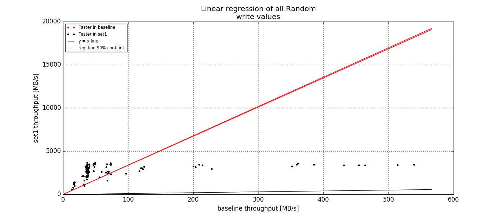
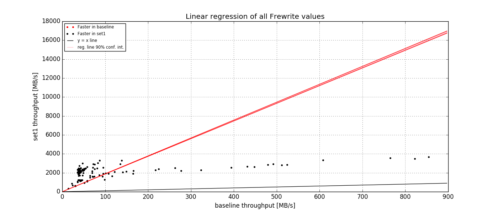
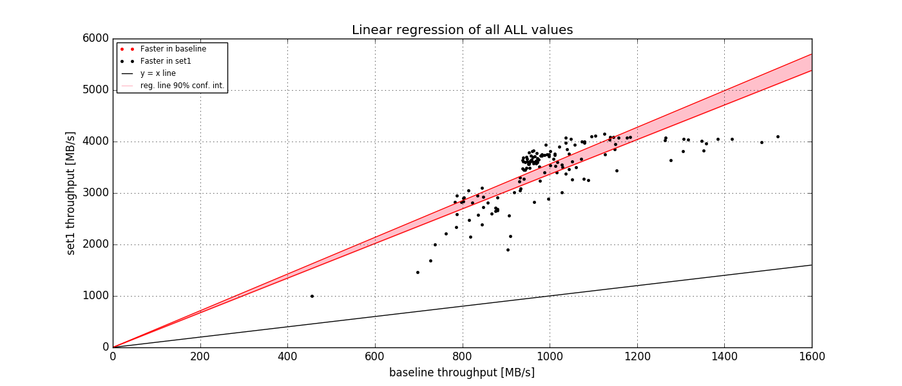

- Baseline data set
- ../iscsi-fuse-virt-2/samples/fuse_virt.1.iozone
- ../iscsi-fuse-virt-2/samples/fuse_virt.2.iozone
- ../iscsi-fuse-virt-2/samples/fuse_virt.3.iozone
- ../iscsi-fuse-virt-2/samples/fuse_virt.4.iozone
- ../iscsi-fuse-virt-2/samples/fuse_virt.5.iozone
- Investigated data set
- ./samples/iscsi_virt_mpath_ap.1.iozone
- ./samples/iscsi_virt_mpath_ap.2.iozone
- ./samples/iscsi_virt_mpath_ap.3.iozone
- ./samples/iscsi_virt_mpath_ap.4.iozone
- ./samples/iscsi_virt_mpath_ap.5.iozone
Overall summary

| Operation |
Write |
Re-write |
Read |
Re-read |
Random read |
Random write |
Backwards read |
Record rewrite |
Strided Read |
Fwrite |
Frewrite |
Fread |
Freread |
ALL |
| baeline | first quartile |
37.34 |
37.37 |
39.61 |
3707.18 |
3995.4 |
37.28 |
12.97 |
34.3 |
31.42 |
37.66 |
37.67 |
39.27 |
3455.69 |
37.79 |
| median |
38.75 |
38.86 |
46.5 |
3877.22 |
4481.92 |
37.81 |
51.64 |
37.7 |
70.7 |
41.08 |
41.32 |
41.55 |
3760.95 |
53.72 |
| third quartile |
63.71 |
65.8 |
95.4 |
4282.51 |
4778.74 |
49.5 |
86.78 |
56.6 |
108.58 |
75.6 |
75.19 |
78.59 |
3965.83 |
501.78 |
| minimum |
10.5 |
10.58 |
4.58 |
2671.54 |
974.91 |
10.79 |
1.54 |
5.3 |
4.05 |
10.73 |
10.53 |
3.72 |
974.91 |
1.54 |
| maximum |
468.12 |
514.4 |
2653.91 |
8395.92 |
5586.4 |
606.83 |
110.84 |
608.33 |
1142.39 |
994.0 |
919.52 |
110.88 |
4486.82 |
8395.92 |
| mean val. |
73.44 |
75.78 |
143.75 |
4034.02 |
4359.09 |
75.79 |
51.14 |
84.21 |
135.34 |
102.35 |
99.94 |
54.96 |
3644.7 |
994.96 |
| standard dev. |
87.21 |
91.17 |
397.64 |
663.67 |
743.0 |
105.38 |
37.28 |
123.01 |
214.02 |
158.25 |
152.04 |
28.41 |
533.62 |
1695.11 |
| ci. min. 90% |
68.11 |
70.2 |
119.43 |
3993.42 |
4313.64 |
69.34 |
48.86 |
76.69 |
122.25 |
92.67 |
90.64 |
53.22 |
3612.06 |
966.24 |
| ci. max. 90% |
78.78 |
81.36 |
168.07 |
4074.61 |
4404.53 |
82.23 |
53.42 |
91.74 |
148.43 |
112.03 |
109.24 |
56.7 |
3677.34 |
1023.68 |
| geom. mean |
52.38 |
53.61 |
63.4 |
3986.77 |
4274.39 |
49.2 |
30.03 |
48.77 |
63.34 |
61.54 |
61.03 |
46.84 |
3594.84 |
141.06 |
| set1 | first quartile |
1041.49 |
1840.86 |
4329.63 |
4431.68 |
4352.4 |
2478.13 |
3501.9 |
2752.42 |
3738.22 |
1949.21 |
1899.56 |
3740.99 |
4098.2 |
2336.42 |
| median |
1262.43 |
2364.02 |
4543.11 |
4694.5 |
4644.37 |
2861.25 |
4385.5 |
3827.96 |
4513.4 |
2317.42 |
2212.71 |
4463.87 |
4539.97 |
3590.97 |
| third quartile |
1322.32 |
2559.36 |
4789.11 |
5256.18 |
5379.99 |
3212.91 |
4540.98 |
4158.37 |
4836.6 |
2583.23 |
2378.77 |
4613.17 |
4900.44 |
4543.5 |
| minimum |
121.54 |
322.48 |
1860.61 |
3126.32 |
1279.43 |
549.69 |
357.68 |
549.69 |
484.65 |
356.93 |
304.5 |
57.33 |
974.91 |
57.33 |
| maximum |
2247.89 |
2680.96 |
7812.5 |
8395.92 |
6784.33 |
4217.97 |
4888.54 |
5399.08 |
6845.88 |
3577.53 |
3906.72 |
4932.44 |
5658.79 |
8395.92 |
| mean val. |
1143.6 |
2121.15 |
4497.19 |
4754.87 |
4703.43 |
2725.28 |
3900.58 |
3425.08 |
4280.07 |
2245.84 |
2122.55 |
4086.17 |
4425.3 |
3417.78 |
| standard dev. |
313.95 |
584.59 |
554.24 |
701.09 |
797.3 |
693.6 |
979.7 |
975.38 |
1015.2 |
560.7 |
585.23 |
858.1 |
775.17 |
1378.75 |
| ci. min. 90% |
1124.4 |
2085.39 |
4463.29 |
4711.98 |
4654.66 |
2682.86 |
3840.65 |
3365.42 |
4217.98 |
2211.55 |
2086.76 |
4033.69 |
4377.88 |
3394.42 |
| ci. max. 90% |
1162.81 |
2156.91 |
4531.09 |
4797.75 |
4752.2 |
2767.71 |
3960.5 |
3484.74 |
4342.17 |
2280.14 |
2158.35 |
4138.66 |
4472.71 |
3441.14 |
| geom. mean |
1076.7 |
2000.21 |
4459.27 |
4704.73 |
4627.88 |
2604.63 |
3682.47 |
3229.99 |
4091.76 |
2159.03 |
2016.8 |
3917.4 |
4336.54 |
3048.12 |
| linear regression slope 90% |
16.09 - 16.37 |
29.31 - 29.59 |
30.56 - 30.84 |
1.12 - 1.23 |
1.03 - 1.13 |
33.69 - 33.95 |
75.66 - 75.91 |
42.03 - 42.3 |
30.86 - 31.13 |
19.97 - 20.23 |
18.67 - 18.93 |
75.3 - 75.57 |
1.18 - 1.26 |
3.36 - 3.56 |
| ttest equality |
DIFF |
DIFF |
DIFF |
DIFF |
DIFF |
DIFF |
DIFF |
DIFF |
DIFF |
DIFF |
DIFF |
DIFF |
DIFF |
DIFF |
| baseline set1 difference |
1457.09 % |
2699.05 % |
3028.42 % |
17.87 % |
7.9 % |
3496.0 % |
7526.67 % |
3967.16 % |
3062.55 % |
2094.31 % |
2023.85 % |
7335.18 % |
21.42 % |
243.51 % |
| ttest p-value |
0.0 |
0.0 |
0.0 |
0.0 |
0.0 |
0.0 |
0.0 |
0.0 |
0.0 |
0.0 |
0.0 |
0.0 |
0.0 |
0.0 |
Write
| Write |
File size [kB] |
4 |
8 |
16 |
32 |
64 |
128 |
256 |
512 |
1024 |
2048 |
4096 |
8192 |
16384 |
32768 |
65536 |
131072 |
262144 |
524288 |
1048576 |
|---|
| baseline | first quartile |
10.73 |
13.32 |
16.37 |
25.8 |
35.7 |
62.16 |
72.47 |
85.24 |
86.88 |
67.37 |
47.12 |
39.56 |
38.35 |
37.74 |
37.5 |
37.38 |
37.31 |
37.28 |
37.27 |
| median |
10.73 |
18.13 |
24.3 |
35.59 |
65.8 |
96.93 |
120.83 |
168.79 |
208.41 |
70.41 |
48.19 |
40.11 |
38.55 |
37.8 |
37.53 |
37.39 |
37.32 |
37.29 |
37.27 |
| third quartile |
11.99 |
21.4 |
41.83 |
61.29 |
93.26 |
161.33 |
289.24 |
369.3 |
374.23 |
72.53 |
48.81 |
40.73 |
39.02 |
37.89 |
37.59 |
37.42 |
37.33 |
37.29 |
37.27 |
| mean val. |
11.53 |
17.41 |
27.3 |
44.72 |
77.66 |
126.07 |
172.04 |
210.32 |
233.93 |
67.93 |
47.96 |
40.18 |
38.67 |
37.83 |
37.39 |
37.36 |
37.1 |
37.06 |
37.01 |
| standard dev. |
1.35 |
4.58 |
11.89 |
27.48 |
53.33 |
94.48 |
118.81 |
142.54 |
144.66 |
7.51 |
1.2 |
0.74 |
0.41 |
0.12 |
0.82 |
0.27 |
0.95 |
0.9 |
1.5 |
| ci. min. 90% |
10.24 |
14.75 |
21.9 |
34.1 |
59.41 |
96.76 |
138.09 |
172.34 |
197.69 |
66.15 |
47.69 |
40.02 |
38.58 |
37.8 |
37.18 |
37.29 |
36.87 |
36.84 |
36.63 |
| ci. max. 90% |
12.82 |
20.06 |
32.71 |
55.35 |
95.91 |
155.37 |
206.0 |
248.29 |
270.16 |
69.71 |
48.24 |
40.34 |
38.75 |
37.86 |
37.59 |
37.43 |
37.34 |
37.29 |
37.39 |
| geom. mean |
11.47 |
16.84 |
24.92 |
37.28 |
62.61 |
98.97 |
133.32 |
159.57 |
180.77 |
67.46 |
47.95 |
40.17 |
38.67 |
37.83 |
37.38 |
37.36 |
37.09 |
37.05 |
36.97 |
| minimum |
10.5 |
11.55 |
13.55 |
14.21 |
24.25 |
33.94 |
42.66 |
37.12 |
36.39 |
47.77 |
45.07 |
38.78 |
38.04 |
37.65 |
33.63 |
35.59 |
31.19 |
32.39 |
27.2 |
| maximum |
13.71 |
22.77 |
44.62 |
98.56 |
182.7 |
382.19 |
389.98 |
458.31 |
468.12 |
75.51 |
50.19 |
42.02 |
39.7 |
38.17 |
37.81 |
37.54 |
37.39 |
37.32 |
37.28 |
| set1 | first quartile |
121.54 |
236.5 |
305.81 |
438.04 |
542.96 |
696.07 |
861.11 |
954.06 |
1046.01 |
1126.65 |
1146.77 |
1182.23 |
1202.93 |
1260.55 |
1257.0 |
1260.85 |
1260.05 |
1269.79 |
1367.89 |
| median |
130.23 |
254.51 |
381.45 |
526.35 |
679.47 |
889.68 |
1041.49 |
1148.42 |
1248.75 |
1289.9 |
1297.86 |
1301.75 |
1268.24 |
1305.17 |
1298.62 |
1304.99 |
1303.74 |
1310.66 |
1472.35 |
| third quartile |
130.23 |
286.08 |
458.92 |
570.39 |
753.71 |
961.9 |
1149.38 |
1226.04 |
1303.87 |
1341.79 |
1345.0 |
1334.46 |
1315.14 |
1316.38 |
1317.33 |
1319.42 |
1320.51 |
1332.42 |
1570.18 |
| mean val. |
128.52 |
260.19 |
377.03 |
502.14 |
648.04 |
831.59 |
993.96 |
1082.19 |
1157.72 |
1203.55 |
1219.14 |
1216.26 |
1201.58 |
1286.49 |
1286.08 |
1288.43 |
1288.93 |
1305.73 |
1556.34 |
| standard dev. |
7.33 |
28.63 |
74.28 |
100.15 |
148.2 |
200.45 |
196.74 |
195.43 |
210.35 |
199.12 |
190.64 |
182.31 |
168.89 |
39.76 |
37.86 |
39.66 |
39.23 |
49.81 |
259.38 |
| ci. min. 90% |
121.54 |
243.59 |
343.26 |
463.42 |
597.33 |
769.4 |
937.73 |
1030.13 |
1105.03 |
1156.34 |
1176.12 |
1176.93 |
1166.62 |
1276.53 |
1276.59 |
1278.49 |
1279.1 |
1293.26 |
1491.38 |
| ci. max. 90% |
135.51 |
276.79 |
410.81 |
540.86 |
698.75 |
893.77 |
1050.19 |
1134.25 |
1210.4 |
1250.76 |
1262.16 |
1255.59 |
1236.54 |
1296.45 |
1295.56 |
1298.36 |
1298.75 |
1318.21 |
1621.31 |
| geom. mean |
128.36 |
258.78 |
369.72 |
492.03 |
630.64 |
804.34 |
972.63 |
1062.19 |
1135.57 |
1184.1 |
1201.26 |
1199.84 |
1187.4 |
1285.88 |
1285.53 |
1287.82 |
1288.34 |
1304.81 |
1537.57 |
| minimum |
121.54 |
229.46 |
233.38 |
346.93 |
385.62 |
418.16 |
592.48 |
648.51 |
677.94 |
717.11 |
732.32 |
730.13 |
728.92 |
1200.44 |
1215.46 |
1213.57 |
1214.96 |
1224.11 |
1250.9 |
| maximum |
139.08 |
301.16 |
462.15 |
666.0 |
947.03 |
1135.3 |
1262.12 |
1322.45 |
1412.79 |
1394.89 |
1378.82 |
1360.31 |
1335.56 |
1334.61 |
1334.17 |
1336.69 |
1337.32 |
1437.09 |
2247.89 |
| ttest equality |
DIFF |
DIFF |
DIFF |
DIFF |
DIFF |
DIFF |
DIFF |
DIFF |
DIFF |
DIFF |
DIFF |
DIFF |
DIFF |
DIFF |
DIFF |
DIFF |
DIFF |
DIFF |
DIFF |
| baseline set1 difference |
1113.67 % |
1303.65 % |
1469.72 % |
1378.99 % |
932.6 % |
817.84 % |
761.92 % |
580.37 % |
499.17 % |
1731.89 % |
2593.47 % |
3145.55 % |
3190.13 % |
3353.19 % |
3359.93 % |
3390.42 % |
3393.29 % |
3414.96 % |
3850.43 % |
| ttest p-value |
0.0 |
0.0 |
0.0 |
0.0 |
0.0 |
0.0 |
0.0 |
0.0 |
0.0 |
0.0 |
0.0 |
0.0 |
0.0 |
0.0 |
0.0 |
0.0 |
0.0 |
0.0 |
0.0 |
| Write |
Block size [kB] |
4 |
8 |
16 |
32 |
64 |
128 |
256 |
512 |
1024 |
2048 |
4096 |
8192 |
16384 |
|---|
| baseline | first quartile |
16.67 |
31.03 |
42.6 |
48.28 |
37.45 |
37.39 |
37.39 |
37.32 |
37.33 |
37.32 |
37.32 |
37.31 |
37.3 |
| median |
38.04 |
45.14 |
60.27 |
83.92 |
40.05 |
39.47 |
38.66 |
38.23 |
37.79 |
37.68 |
37.55 |
37.47 |
37.39 |
| third quartile |
45.81 |
63.59 |
84.93 |
110.88 |
172.71 |
283.22 |
74.73 |
54.83 |
48.28 |
39.63 |
39.02 |
38.21 |
37.75 |
| mean val. |
32.86 |
47.96 |
65.47 |
88.02 |
90.53 |
120.03 |
119.59 |
106.45 |
76.24 |
42.02 |
38.96 |
37.91 |
37.6 |
| standard dev. |
13.74 |
18.55 |
24.66 |
40.07 |
70.63 |
124.72 |
142.38 |
145.52 |
108.05 |
10.67 |
3.12 |
0.91 |
0.48 |
| ci. min. 90% |
30.02 |
43.95 |
59.91 |
78.52 |
76.94 |
95.18 |
90.12 |
75.06 |
51.86 |
39.48 |
38.18 |
37.67 |
37.47 |
| ci. max. 90% |
35.71 |
51.96 |
71.04 |
97.52 |
104.11 |
144.89 |
149.07 |
137.84 |
100.63 |
44.55 |
39.74 |
38.15 |
37.74 |
| geom. mean |
29.24 |
44.18 |
61.21 |
79.02 |
67.94 |
73.88 |
68.98 |
60.81 |
51.21 |
41.0 |
38.85 |
37.9 |
37.6 |
| minimum |
10.5 |
20.89 |
38.28 |
38.23 |
32.39 |
37.03 |
35.59 |
31.19 |
37.27 |
27.2 |
36.33 |
37.08 |
36.8 |
| maximum |
49.36 |
76.86 |
118.4 |
184.06 |
212.22 |
382.19 |
399.02 |
468.12 |
434.43 |
74.72 |
49.92 |
40.27 |
39.03 |
| set1 | first quartile |
351.58 |
521.56 |
694.84 |
961.02 |
1206.41 |
1265.48 |
1297.02 |
1311.46 |
1327.03 |
1328.91 |
1312.99 |
1235.51 |
1218.2 |
| median |
644.56 |
892.91 |
1041.49 |
1178.57 |
1260.69 |
1284.76 |
1304.99 |
1321.14 |
1331.5 |
1333.94 |
1318.53 |
1240.36 |
1221.76 |
| third quartile |
730.81 |
959.41 |
1112.96 |
1224.21 |
1282.51 |
1298.73 |
1320.47 |
1347.64 |
1351.11 |
1351.12 |
1326.25 |
1259.79 |
1226.89 |
| mean val. |
532.49 |
744.84 |
919.46 |
1066.92 |
1210.11 |
1282.62 |
1310.1 |
1337.59 |
1356.68 |
1376.95 |
1350.6 |
1281.88 |
1269.27 |
| standard dev. |
216.27 |
248.42 |
240.75 |
219.21 |
151.04 |
165.42 |
85.05 |
71.47 |
73.21 |
171.1 |
139.45 |
103.81 |
154.95 |
| ci. min. 90% |
487.71 |
691.25 |
865.13 |
1014.94 |
1181.06 |
1249.66 |
1292.49 |
1322.17 |
1340.16 |
1336.38 |
1315.67 |
1254.22 |
1224.98 |
| ci. max. 90% |
577.26 |
798.43 |
973.79 |
1118.9 |
1239.16 |
1315.59 |
1327.71 |
1353.01 |
1373.2 |
1417.52 |
1385.53 |
1309.54 |
1313.56 |
| geom. mean |
473.39 |
693.35 |
881.82 |
1040.1 |
1199.19 |
1273.87 |
1307.69 |
1335.88 |
1354.91 |
1369.21 |
1345.34 |
1278.26 |
1261.97 |
| minimum |
121.54 |
271.25 |
458.92 |
577.9 |
716.62 |
995.98 |
1072.82 |
1216.58 |
1254.73 |
1313.52 |
1299.56 |
1210.38 |
1200.44 |
| maximum |
755.0 |
998.93 |
1173.76 |
1294.58 |
1531.4 |
2142.67 |
1848.64 |
1700.23 |
1688.1 |
2247.89 |
2202.4 |
1722.25 |
1911.46 |
| ttest equality |
DIFF |
DIFF |
DIFF |
DIFF |
DIFF |
DIFF |
DIFF |
DIFF |
DIFF |
DIFF |
DIFF |
DIFF |
DIFF |
| baseline set1 difference |
1594.43 % |
1877.92 % |
1628.16 % |
1304.39 % |
3047.49 % |
3155.29 % |
3275.96 % |
3356.16 % |
3423.15 % |
3440.45 % |
3411.52 % |
3209.92 % |
3167.72 % |
| ttest p-value |
0.0 |
0.0 |
0.0 |
0.0 |
0.0 |
0.0 |
0.0 |
0.0 |
0.0 |
0.0 |
0.0 |
0.0 |
0.0 |
| Regression line |
|---|
| slope | 16.23362 |
| std. error | 0.0839 |
| ci. max 90% | 16.09472 |
| ci. min. 90% | 16.37252 |
Back on top
Re-write
| Re-write |
File size [kB] |
4 |
8 |
16 |
32 |
64 |
128 |
256 |
512 |
1024 |
2048 |
4096 |
8192 |
16384 |
32768 |
65536 |
131072 |
262144 |
524288 |
1048576 |
|---|
| baseline | first quartile |
10.79 |
15.06 |
20.67 |
28.17 |
45.39 |
62.45 |
75.68 |
92.82 |
86.24 |
66.44 |
47.09 |
39.63 |
38.4 |
37.77 |
37.51 |
37.38 |
37.31 |
37.28 |
37.26 |
| median |
10.97 |
20.28 |
26.49 |
44.25 |
71.51 |
108.77 |
129.94 |
157.63 |
201.94 |
70.4 |
48.21 |
40.06 |
38.55 |
37.8 |
37.53 |
37.39 |
37.32 |
37.29 |
37.27 |
| third quartile |
11.36 |
24.64 |
46.43 |
58.46 |
127.58 |
200.55 |
308.56 |
379.07 |
369.0 |
73.42 |
48.99 |
40.7 |
38.8 |
37.87 |
37.61 |
37.42 |
37.33 |
37.29 |
37.27 |
| mean val. |
11.77 |
19.9 |
32.83 |
47.87 |
91.58 |
133.91 |
183.93 |
219.68 |
236.74 |
68.37 |
48.04 |
40.26 |
38.62 |
37.85 |
37.56 |
37.31 |
37.1 |
36.78 |
36.98 |
| standard dev. |
1.91 |
5.5 |
16.59 |
25.09 |
57.86 |
90.8 |
134.72 |
152.05 |
146.37 |
7.6 |
1.41 |
0.79 |
0.29 |
0.13 |
0.08 |
0.4 |
1.19 |
1.88 |
0.96 |
| ci. min. 90% |
9.95 |
16.72 |
25.29 |
38.17 |
71.78 |
105.74 |
145.43 |
179.18 |
200.08 |
66.57 |
47.72 |
40.09 |
38.56 |
37.82 |
37.54 |
37.21 |
36.8 |
36.31 |
36.74 |
| ci. max. 90% |
13.59 |
23.09 |
40.37 |
57.57 |
111.38 |
162.08 |
222.44 |
260.19 |
273.4 |
70.17 |
48.36 |
40.44 |
38.68 |
37.88 |
37.58 |
37.42 |
37.4 |
37.25 |
37.22 |
| geom. mean |
11.66 |
19.19 |
29.28 |
42.03 |
74.86 |
106.96 |
138.3 |
166.28 |
183.83 |
67.9 |
48.02 |
40.26 |
38.62 |
37.85 |
37.56 |
37.31 |
37.08 |
36.73 |
36.97 |
| minimum |
10.58 |
12.83 |
12.7 |
17.71 |
26.29 |
38.62 |
40.7 |
43.32 |
44.38 |
46.6 |
43.93 |
39.27 |
38.18 |
37.71 |
37.47 |
35.41 |
29.45 |
28.12 |
32.59 |
| maximum |
15.14 |
27.82 |
68.21 |
103.47 |
204.35 |
327.92 |
480.82 |
496.51 |
514.4 |
77.65 |
50.15 |
42.74 |
39.54 |
38.26 |
37.81 |
37.52 |
37.39 |
37.33 |
37.29 |
| set1 | first quartile |
322.48 |
462.79 |
602.32 |
786.05 |
1093.15 |
1228.92 |
1430.29 |
1596.01 |
1890.34 |
1900.44 |
2010.62 |
2205.6 |
2215.78 |
2394.15 |
2388.05 |
2411.72 |
2421.99 |
2425.47 |
2435.51 |
| median |
322.48 |
510.01 |
782.0 |
1065.64 |
1325.26 |
1604.17 |
1837.01 |
2127.66 |
2221.79 |
2365.64 |
2520.31 |
2483.36 |
2436.0 |
2533.42 |
2529.96 |
2529.8 |
2542.43 |
2546.55 |
2548.3 |
| third quartile |
350.04 |
597.89 |
946.05 |
1209.94 |
1525.82 |
1867.08 |
2119.17 |
2241.08 |
2438.82 |
2546.01 |
2622.13 |
2587.33 |
2566.91 |
2564.94 |
2573.07 |
2576.95 |
2574.29 |
2585.33 |
2602.1 |
| mean val. |
335.04 |
523.69 |
781.4 |
1045.59 |
1283.73 |
1528.46 |
1727.77 |
1930.33 |
2084.91 |
2182.55 |
2279.72 |
2296.35 |
2271.88 |
2463.23 |
2469.49 |
2474.09 |
2479.63 |
2483.25 |
2494.1 |
| standard dev. |
17.4 |
73.74 |
154.95 |
243.93 |
314.02 |
388.05 |
430.76 |
467.62 |
461.47 |
461.43 |
464.15 |
435.17 |
415.08 |
144.28 |
136.1 |
134.09 |
135.53 |
137.97 |
137.53 |
| ci. min. 90% |
318.45 |
480.94 |
710.94 |
951.28 |
1176.28 |
1408.08 |
1604.65 |
1805.75 |
1969.32 |
2073.15 |
2174.98 |
2202.47 |
2185.95 |
2427.09 |
2435.4 |
2440.51 |
2445.69 |
2448.69 |
2459.65 |
| ci. max. 90% |
351.62 |
566.44 |
851.87 |
1139.9 |
1391.18 |
1648.84 |
1850.89 |
2054.9 |
2200.49 |
2291.96 |
2384.46 |
2390.24 |
2357.81 |
2499.37 |
2503.58 |
2507.68 |
2513.58 |
2517.81 |
2528.54 |
| geom. mean |
334.68 |
519.0 |
766.95 |
1017.42 |
1244.08 |
1474.7 |
1667.66 |
1865.51 |
2025.74 |
2123.65 |
2221.64 |
2244.54 |
2224.55 |
2458.93 |
2465.69 |
2470.41 |
2475.87 |
2479.36 |
2490.24 |
| minimum |
322.48 |
432.26 |
602.32 |
724.93 |
780.64 |
850.0 |
877.61 |
922.71 |
1129.99 |
1148.84 |
1187.28 |
1174.22 |
1175.68 |
2142.21 |
2191.4 |
2206.48 |
2216.49 |
2214.28 |
2220.59 |
| maximum |
357.68 |
609.01 |
980.99 |
1368.1 |
1693.37 |
2049.55 |
2255.94 |
2564.36 |
2644.9 |
2666.6 |
2672.04 |
2680.96 |
2642.83 |
2617.36 |
2603.22 |
2606.23 |
2603.74 |
2614.43 |
2632.31 |
| ttest equality |
DIFF |
DIFF |
DIFF |
DIFF |
DIFF |
DIFF |
DIFF |
DIFF |
DIFF |
DIFF |
DIFF |
DIFF |
DIFF |
DIFF |
DIFF |
DIFF |
DIFF |
DIFF |
DIFF |
| baseline set1 difference |
2838.45 % |
2415.33 % |
2851.92 % |
2308.21 % |
1753.26 % |
1374.79 % |
1313.76 % |
1249.75 % |
1000.21 % |
3260.47 % |
5127.99 % |
6099.69 % |
6218.78 % |
6601.52 % |
6641.46 % |
6665.86 % |
6712.1 % |
6729.76 % |
6737.66 % |
| ttest p-value |
0.0 |
0.0 |
0.0 |
0.0 |
0.0 |
0.0 |
0.0 |
0.0 |
0.0 |
0.0 |
0.0 |
0.0 |
0.0 |
0.0 |
0.0 |
0.0 |
0.0 |
0.0 |
0.0 |
| Re-write |
Block size [kB] |
4 |
8 |
16 |
32 |
64 |
128 |
256 |
512 |
1024 |
2048 |
4096 |
8192 |
16384 |
|---|
| baseline | first quartile |
21.23 |
38.4 |
48.62 |
48.26 |
37.41 |
37.41 |
37.39 |
37.36 |
37.33 |
37.32 |
37.3 |
37.31 |
37.28 |
| median |
40.12 |
48.01 |
65.8 |
104.14 |
40.37 |
39.25 |
38.54 |
38.26 |
37.79 |
37.73 |
37.52 |
37.46 |
37.39 |
| third quartile |
45.74 |
66.85 |
85.67 |
128.15 |
187.61 |
287.15 |
74.77 |
55.69 |
46.55 |
40.23 |
38.66 |
37.96 |
37.78 |
| mean val. |
34.72 |
50.7 |
67.61 |
94.79 |
94.78 |
121.6 |
123.93 |
107.36 |
79.99 |
42.03 |
38.76 |
37.85 |
37.37 |
| standard dev. |
13.19 |
18.2 |
24.57 |
43.46 |
77.2 |
127.21 |
150.95 |
146.64 |
120.84 |
10.55 |
3.05 |
0.89 |
1.21 |
| ci. min. 90% |
31.99 |
46.77 |
62.07 |
84.49 |
79.93 |
96.25 |
92.68 |
75.73 |
52.72 |
39.53 |
38.0 |
37.62 |
37.02 |
| ci. max. 90% |
37.45 |
54.63 |
73.16 |
105.1 |
109.63 |
146.94 |
155.18 |
139.0 |
107.25 |
44.53 |
39.52 |
38.09 |
37.71 |
| geom. mean |
31.43 |
47.29 |
63.45 |
84.09 |
69.35 |
74.06 |
69.75 |
61.58 |
51.52 |
41.05 |
38.65 |
37.84 |
37.35 |
| minimum |
10.58 |
20.83 |
38.26 |
38.24 |
29.45 |
29.2 |
32.59 |
37.0 |
36.81 |
28.12 |
35.55 |
36.75 |
33.04 |
| maximum |
50.12 |
83.81 |
122.99 |
193.72 |
260.98 |
377.13 |
480.82 |
496.51 |
514.4 |
74.53 |
49.57 |
40.07 |
39.25 |
| set1 | first quartile |
724.93 |
1064.76 |
1342.44 |
1686.87 |
2188.41 |
2308.82 |
2427.4 |
2559.63 |
2591.34 |
2591.67 |
2549.19 |
2269.77 |
2209.37 |
| median |
971.98 |
1431.55 |
1729.17 |
2010.25 |
2398.13 |
2516.84 |
2536.47 |
2575.0 |
2603.15 |
2603.32 |
2563.67 |
2276.83 |
2220.59 |
| third quartile |
1172.31 |
1635.52 |
1982.14 |
2247.87 |
2430.41 |
2532.35 |
2546.59 |
2585.57 |
2622.08 |
2623.27 |
2585.35 |
2312.72 |
2225.67 |
| mean val. |
907.18 |
1307.12 |
1627.03 |
1942.24 |
2274.45 |
2421.06 |
2480.91 |
2572.54 |
2605.0 |
2595.28 |
2569.99 |
2299.42 |
2214.48 |
| standard dev. |
290.81 |
368.46 |
362.31 |
323.92 |
238.11 |
171.76 |
114.63 |
35.88 |
31.84 |
80.02 |
39.07 |
59.34 |
19.75 |
| ci. min. 90% |
846.98 |
1227.63 |
1545.27 |
1865.44 |
2228.65 |
2386.83 |
2457.18 |
2564.79 |
2597.81 |
2576.3 |
2560.2 |
2283.61 |
2208.84 |
| ci. max. 90% |
967.38 |
1386.61 |
1708.79 |
2019.04 |
2320.25 |
2455.28 |
2504.64 |
2580.28 |
2612.18 |
2614.25 |
2579.77 |
2315.23 |
2220.13 |
| geom. mean |
848.37 |
1244.61 |
1582.59 |
1913.72 |
2260.74 |
2414.66 |
2478.19 |
2572.29 |
2604.81 |
2593.96 |
2569.7 |
2298.69 |
2214.39 |
| minimum |
322.48 |
557.22 |
925.58 |
1353.97 |
1650.72 |
1979.9 |
2119.17 |
2438.82 |
2492.45 |
2169.39 |
2493.19 |
2169.5 |
2142.21 |
| maximum |
1229.42 |
1717.06 |
2015.67 |
2327.61 |
2489.79 |
2632.31 |
2627.18 |
2657.82 |
2666.6 |
2680.96 |
2672.04 |
2459.32 |
2239.66 |
| ttest equality |
DIFF |
DIFF |
DIFF |
DIFF |
DIFF |
DIFF |
DIFF |
DIFF |
DIFF |
DIFF |
DIFF |
DIFF |
DIFF |
| baseline set1 difference |
2322.91 % |
2881.8 % |
2527.93 % |
1830.31 % |
5840.08 % |
6313.04 % |
6481.55 % |
6629.45 % |
6787.91 % |
6799.15 % |
6732.53 % |
5978.28 % |
5838.89 % |
| ttest p-value |
0.0 |
0.0 |
0.0 |
0.0 |
0.0 |
0.0 |
0.0 |
0.0 |
0.0 |
0.0 |
0.0 |
0.0 |
0.0 |

| Regression line |
|---|
| slope | 29.44712 |
| std. error | 0.0842 |
| ci. max 90% | 29.30772 |
| ci. min. 90% | 29.58652 |
Back on top
Read
| Read |
File size [kB] |
4 |
8 |
16 |
32 |
64 |
128 |
256 |
512 |
1024 |
2048 |
4096 |
8192 |
16384 |
32768 |
65536 |
131072 |
262144 |
524288 |
1048576 |
|---|
| baseline | first quartile |
6.24 |
13.07 |
25.67 |
14.84 |
25.08 |
24.28 |
40.82 |
48.15 |
43.86 |
40.91 |
39.92 |
39.58 |
39.6 |
39.77 |
39.75 |
39.73 |
39.68 |
39.61 |
39.61 |
| median |
6.31 |
13.32 |
26.84 |
15.58 |
26.19 |
41.88 |
61.51 |
65.93 |
47.92 |
42.76 |
41.06 |
40.41 |
40.26 |
67.4 |
66.5 |
66.03 |
65.65 |
65.61 |
65.58 |
| third quartile |
6.35 |
13.86 |
27.85 |
50.03 |
95.57 |
197.71 |
216.03 |
88.51 |
56.05 |
63.4 |
84.45 |
82.36 |
93.6 |
107.94 |
101.07 |
97.97 |
96.51 |
95.78 |
95.34 |
| mean val. |
6.28 |
12.5 |
26.1 |
30.09 |
52.84 |
92.55 |
130.91 |
152.87 |
183.71 |
237.0 |
280.17 |
268.17 |
260.03 |
85.01 |
74.7 |
71.09 |
70.02 |
69.31 |
68.95 |
| standard dev. |
0.17 |
2.95 |
5.44 |
19.02 |
37.92 |
86.64 |
134.17 |
231.12 |
367.47 |
558.11 |
710.74 |
687.87 |
673.92 |
54.48 |
36.49 |
30.69 |
29.09 |
28.2 |
27.77 |
| ci. min. 90% |
6.12 |
10.79 |
23.63 |
22.73 |
39.87 |
65.67 |
92.56 |
91.3 |
91.67 |
104.67 |
119.78 |
119.77 |
120.52 |
71.36 |
65.56 |
63.4 |
62.73 |
62.25 |
61.99 |
| ci. max. 90% |
6.44 |
14.21 |
28.57 |
37.44 |
65.82 |
119.43 |
169.25 |
214.44 |
275.76 |
369.33 |
440.56 |
416.57 |
399.54 |
98.66 |
83.84 |
78.78 |
77.3 |
76.37 |
75.9 |
| geom. mean |
6.28 |
11.99 |
25.14 |
24.83 |
41.69 |
59.51 |
85.1 |
85.01 |
74.13 |
71.11 |
72.99 |
74.36 |
76.39 |
71.33 |
66.52 |
64.69 |
64.09 |
63.64 |
63.4 |
| minimum |
6.02 |
4.58 |
7.74 |
13.89 |
23.12 |
21.18 |
27.67 |
38.66 |
36.94 |
37.92 |
38.69 |
38.68 |
38.95 |
39.3 |
39.22 |
39.17 |
39.3 |
39.19 |
39.16 |
| maximum |
6.48 |
14.54 |
33.04 |
61.51 |
123.78 |
241.29 |
443.41 |
836.25 |
1253.23 |
1980.4 |
2564.22 |
2562.42 |
2653.91 |
207.52 |
142.33 |
121.82 |
113.97 |
110.42 |
108.74 |
| set1 | first quartile |
1860.61 |
3721.23 |
3899.63 |
3965.86 |
4173.89 |
4340.83 |
4381.76 |
4341.52 |
4671.73 |
4537.32 |
4664.48 |
4639.53 |
4353.81 |
3937.53 |
4322.85 |
4301.65 |
4311.73 |
4329.26 |
4356.6 |
| median |
2098.98 |
3721.23 |
3899.63 |
4397.55 |
4457.8 |
4606.87 |
4623.23 |
4631.46 |
4761.89 |
4710.57 |
4766.52 |
4777.58 |
4606.97 |
4471.72 |
4475.21 |
4481.18 |
4475.36 |
4496.75 |
4509.46 |
| third quartile |
2098.98 |
4197.96 |
5334.47 |
4682.46 |
4783.15 |
4818.57 |
4951.09 |
4948.38 |
4924.01 |
4865.62 |
4926.06 |
4861.69 |
4725.38 |
4585.85 |
4533.55 |
4534.7 |
4533.39 |
4549.5 |
4538.16 |
| mean val. |
2365.09 |
4273.37 |
4442.85 |
4420.12 |
4502.37 |
4605.22 |
4657.83 |
4684.16 |
4790.54 |
4750.3 |
4769.74 |
4676.71 |
4455.32 |
4295.08 |
4300.07 |
4306.19 |
4310.62 |
4323.96 |
4333.63 |
| standard dev. |
869.74 |
1263.67 |
855.72 |
549.2 |
825.45 |
632.47 |
542.53 |
472.99 |
406.71 |
374.64 |
339.43 |
317.64 |
434.48 |
492.76 |
447.1 |
446.43 |
447.69 |
454.97 |
455.86 |
| ci. min. 90% |
1535.88 |
3540.85 |
4053.7 |
4207.77 |
4219.92 |
4409.02 |
4502.76 |
4558.15 |
4688.67 |
4661.47 |
4693.15 |
4608.18 |
4365.37 |
4171.66 |
4188.08 |
4194.37 |
4198.48 |
4210.0 |
4219.44 |
| ci. max. 90% |
3194.29 |
5005.9 |
4832.01 |
4632.47 |
4784.82 |
4801.42 |
4812.89 |
4810.16 |
4892.41 |
4839.12 |
4846.34 |
4745.23 |
4545.26 |
4418.51 |
4412.06 |
4418.01 |
4422.75 |
4437.92 |
4447.81 |
| geom. mean |
2264.74 |
4155.3 |
4366.37 |
4387.17 |
4413.11 |
4561.59 |
4627.38 |
4661.48 |
4773.62 |
4736.1 |
4757.52 |
4665.43 |
4432.59 |
4265.26 |
4275.38 |
4281.67 |
4285.99 |
4298.46 |
4308.11 |
| minimum |
1860.61 |
3721.23 |
3005.45 |
3466.99 |
1888.57 |
2982.2 |
3681.72 |
3906.72 |
3803.3 |
3976.01 |
4004.29 |
3763.05 |
3328.51 |
3236.52 |
3383.19 |
3415.17 |
3442.99 |
3383.85 |
3444.77 |
| maximum |
3906.25 |
7812.5 |
5551.22 |
5283.95 |
6270.53 |
5971.0 |
5704.81 |
5686.33 |
5747.15 |
5680.24 |
5421.09 |
5259.47 |
5087.55 |
4915.53 |
4855.06 |
4836.38 |
4842.07 |
4827.41 |
4835.02 |
| ttest equality |
DIFF |
DIFF |
DIFF |
DIFF |
DIFF |
DIFF |
DIFF |
DIFF |
DIFF |
DIFF |
DIFF |
DIFF |
DIFF |
DIFF |
DIFF |
DIFF |
DIFF |
DIFF |
DIFF |
| baseline set1 difference |
33171.75 % |
27840.59 % |
14429.79 % |
28134.3 % |
16918.81 % |
10901.48 % |
7415.66 % |
6924.33 % |
9838.2 % |
10917.5 % |
11508.51 % |
11723.59 % |
11343.12 % |
6534.94 % |
6629.83 % |
6686.45 % |
6717.27 % |
6754.02 % |
6775.97 % |
| ttest p-value |
0.0003 |
0.0 |
0.0 |
0.0 |
0.0 |
0.0 |
0.0 |
0.0 |
0.0 |
0.0 |
0.0 |
0.0 |
0.0 |
0.0 |
0.0 |
0.0 |
0.0 |
0.0 |
0.0 |
| Read |
Block size [kB] |
4 |
8 |
16 |
32 |
64 |
128 |
256 |
512 |
1024 |
2048 |
4096 |
8192 |
16384 |
|---|
| baseline | first quartile |
23.35 |
24.54 |
38.83 |
39.95 |
39.49 |
39.61 |
39.69 |
46.5 |
65.69 |
83.09 |
96.45 |
104.32 |
110.42 |
| median |
37.83 |
38.56 |
40.52 |
43.67 |
39.77 |
39.99 |
40.21 |
47.49 |
67.4 |
85.1 |
101.05 |
113.01 |
121.8 |
| third quartile |
39.54 |
39.59 |
43.68 |
52.87 |
66.81 |
52.57 |
47.12 |
56.51 |
84.45 |
107.69 |
124.97 |
149.57 |
207.17 |
| mean val. |
30.21 |
31.87 |
39.11 |
50.66 |
61.17 |
70.23 |
77.04 |
113.16 |
177.26 |
274.78 |
378.43 |
424.35 |
481.93 |
| standard dev. |
12.44 |
11.01 |
9.86 |
18.5 |
46.61 |
67.12 |
98.35 |
194.95 |
329.88 |
545.34 |
760.69 |
805.18 |
866.02 |
| ci. min. 90% |
27.64 |
29.49 |
36.88 |
46.27 |
52.21 |
56.85 |
56.68 |
71.1 |
102.82 |
145.48 |
187.9 |
209.85 |
234.41 |
| ci. max. 90% |
32.79 |
34.24 |
41.34 |
55.05 |
70.14 |
83.6 |
97.4 |
155.22 |
251.7 |
404.08 |
568.96 |
638.85 |
729.46 |
| geom. mean |
26.41 |
29.4 |
37.7 |
48.31 |
52.32 |
54.74 |
54.58 |
66.22 |
93.7 |
125.46 |
155.63 |
176.66 |
199.31 |
| minimum |
4.58 |
7.74 |
14.67 |
24.44 |
39.17 |
39.27 |
39.16 |
46.09 |
46.16 |
56.04 |
95.3 |
92.47 |
108.69 |
| maximum |
52.43 |
53.09 |
66.3 |
123.78 |
241.29 |
360.24 |
443.41 |
836.25 |
1253.23 |
1980.4 |
2564.22 |
2562.42 |
2653.91 |
| set1 | first quartile |
3866.11 |
4455.96 |
4457.8 |
4527.52 |
4724.85 |
4668.6 |
4483.71 |
4494.66 |
4504.13 |
4491.64 |
4322.85 |
3570.5 |
3437.58 |
| median |
4008.14 |
4770.83 |
4562.88 |
4628.04 |
4800.37 |
4714.55 |
4536.4 |
4545.47 |
4549.5 |
4525.7 |
4369.22 |
3600.07 |
3455.3 |
| third quartile |
4096.78 |
4903.07 |
4738.04 |
4811.21 |
4851.04 |
4825.47 |
4734.24 |
4790.75 |
4869.77 |
4818.24 |
4527.41 |
3678.62 |
3468.17 |
| mean val. |
3803.47 |
4694.78 |
4576.32 |
4681.02 |
4830.86 |
4778.2 |
4675.11 |
4703.16 |
4700.42 |
4692.36 |
4517.3 |
3653.36 |
3439.62 |
| standard dev. |
574.53 |
573.16 |
391.75 |
228.59 |
295.1 |
289.53 |
323.87 |
330.53 |
359.89 |
374.86 |
333.6 |
143.91 |
57.03 |
| ci. min. 90% |
3684.53 |
4571.13 |
4487.91 |
4626.82 |
4774.1 |
4720.5 |
4608.06 |
4631.86 |
4619.21 |
4603.48 |
4433.74 |
3615.03 |
3423.32 |
| ci. max. 90% |
3922.41 |
4818.44 |
4664.72 |
4735.22 |
4887.62 |
4835.89 |
4742.15 |
4774.47 |
4781.64 |
4781.24 |
4600.85 |
3691.7 |
3455.92 |
| geom. mean |
3743.19 |
4664.4 |
4558.42 |
4675.66 |
4822.4 |
4770.13 |
4664.94 |
4692.56 |
4687.57 |
4678.4 |
4506.16 |
3650.72 |
3439.15 |
| minimum |
1860.61 |
3721.23 |
2982.2 |
4173.89 |
3843.67 |
4269.22 |
4372.77 |
4346.76 |
3937.53 |
3803.19 |
4228.95 |
3454.25 |
3236.52 |
| maximum |
4204.39 |
7812.5 |
5551.22 |
5283.95 |
6270.53 |
5971.0 |
5704.81 |
5686.33 |
5747.15 |
5680.24 |
5421.09 |
4102.61 |
3520.41 |
| ttest equality |
DIFF |
DIFF |
DIFF |
DIFF |
DIFF |
DIFF |
DIFF |
DIFF |
DIFF |
DIFF |
DIFF |
DIFF |
DIFF |
| baseline set1 difference |
10494.3 % |
12273.72 % |
11160.4 % |
10498.37 % |
11968.99 % |
11690.25 % |
11182.34 % |
9471.38 % |
6649.95 % |
5217.82 % |
4224.0 % |
3085.66 % |
2736.87 % |
| ttest p-value |
0.0 |
0.0 |
0.0 |
0.0 |
0.0 |
0.0 |
0.0 |
0.0 |
0.0 |
0.0 |
0.0 |
0.0 |
0.0 |
| Regression line |
|---|
| slope | 30.70072 |
| std. error | 0.0831 |
| ci. max 90% | 30.56315 |
| ci. min. 90% | 30.83829 |
Back on top
Re-read
| Re-read |
File size [kB] |
4 |
8 |
16 |
32 |
64 |
128 |
256 |
512 |
1024 |
2048 |
4096 |
8192 |
16384 |
32768 |
65536 |
131072 |
262144 |
524288 |
1048576 |
|---|
| baseline | first quartile |
3409.29 |
4853.11 |
4508.68 |
3774.66 |
4173.89 |
3889.21 |
3872.27 |
3870.71 |
4014.43 |
4168.22 |
4248.14 |
3935.17 |
3542.9 |
3622.04 |
3626.49 |
3664.68 |
3579.98 |
3675.39 |
3690.85 |
| median |
3409.29 |
6818.58 |
5117.72 |
3936.31 |
4457.8 |
4103.23 |
4099.11 |
4200.14 |
4467.7 |
4406.25 |
4395.62 |
4014.02 |
3683.29 |
3707.18 |
3717.9 |
3757.87 |
3769.18 |
3780.52 |
3795.45 |
| third quartile |
3906.25 |
7812.5 |
5117.72 |
4435.71 |
4872.05 |
4807.6 |
4814.27 |
4693.94 |
4671.73 |
4574.43 |
4550.61 |
4099.37 |
3750.61 |
3761.62 |
3777.12 |
3797.77 |
3808.06 |
3807.6 |
3815.95 |
| mean val. |
3608.07 |
6334.61 |
5040.34 |
4089.57 |
4508.57 |
4306.95 |
4296.26 |
4308.84 |
4443.02 |
4455.63 |
4422.17 |
3991.15 |
3635.35 |
3598.78 |
3604.31 |
3627.42 |
3631.13 |
3646.72 |
3658.97 |
| standard dev. |
272.2 |
1753.22 |
1094.78 |
504.04 |
549.76 |
636.87 |
622.76 |
587.42 |
537.55 |
483.0 |
381.58 |
188.88 |
186.27 |
270.59 |
288.18 |
307.04 |
327.03 |
319.3 |
334.99 |
| ci. min. 90% |
3348.56 |
5318.3 |
4542.47 |
3894.69 |
4320.45 |
4109.38 |
4118.27 |
4152.35 |
4308.38 |
4341.11 |
4336.06 |
3950.41 |
3596.79 |
3531.01 |
3532.12 |
3550.52 |
3549.22 |
3566.75 |
3575.06 |
| ci. max. 90% |
3867.58 |
7350.92 |
5538.22 |
4284.46 |
4696.68 |
4504.51 |
4474.26 |
4465.33 |
4577.67 |
4570.15 |
4508.28 |
4031.9 |
3673.91 |
3666.56 |
3676.49 |
3704.33 |
3713.04 |
3726.7 |
3742.88 |
| geom. mean |
3600.0 |
6076.66 |
4946.33 |
4060.62 |
4475.83 |
4263.13 |
4253.23 |
4272.34 |
4412.26 |
4431.1 |
4406.31 |
3986.57 |
3630.5 |
3587.94 |
3592.28 |
3613.78 |
3615.67 |
3632.03 |
3642.8 |
| minimum |
3409.29 |
3721.23 |
3899.63 |
3466.99 |
3702.3 |
3365.01 |
3041.06 |
3598.37 |
3558.1 |
3697.37 |
3676.95 |
3445.44 |
3170.18 |
2671.54 |
3008.09 |
2988.0 |
2954.75 |
3016.18 |
3004.82 |
| maximum |
3906.25 |
7812.5 |
8395.92 |
5283.95 |
5263.33 |
5472.41 |
5553.73 |
5625.32 |
5654.18 |
5649.63 |
5346.8 |
4321.9 |
3930.29 |
3900.45 |
3927.32 |
3953.54 |
3986.35 |
3988.0 |
3999.72 |
| set1 | first quartile |
3906.25 |
4197.96 |
4508.68 |
4397.55 |
4457.8 |
4450.45 |
4543.11 |
4571.15 |
4692.63 |
4863.55 |
5260.57 |
4983.28 |
4387.4 |
3932.68 |
4374.85 |
4332.23 |
4355.14 |
4360.08 |
4394.85 |
| median |
3906.25 |
7812.5 |
5117.72 |
5079.19 |
4783.15 |
5002.48 |
4904.34 |
4925.25 |
5231.07 |
5362.67 |
5495.67 |
5174.72 |
4588.7 |
4530.58 |
4471.48 |
4510.84 |
4500.07 |
4523.6 |
4535.01 |
| third quartile |
3906.25 |
7812.5 |
5551.22 |
5283.95 |
4872.05 |
5362.15 |
5553.73 |
5625.32 |
5616.33 |
5581.97 |
5566.79 |
5362.01 |
4766.32 |
4650.36 |
4588.11 |
4563.92 |
4572.33 |
4576.01 |
4583.93 |
| mean val. |
3906.25 |
6271.34 |
5316.69 |
4785.01 |
4821.71 |
4850.78 |
4985.66 |
5016.83 |
5097.75 |
5185.09 |
5311.32 |
5081.11 |
4471.39 |
4312.23 |
4319.71 |
4330.92 |
4337.96 |
4352.14 |
4392.92 |
| standard dev. |
0.0 |
1995.97 |
1398.93 |
543.47 |
506.38 |
582.23 |
658.48 |
646.9 |
562.32 |
486.84 |
405.51 |
448.13 |
442.63 |
485.09 |
446.97 |
450.75 |
452.83 |
456.12 |
450.4 |
| ci. min. 90% |
3906.25 |
5114.31 |
4680.5 |
4574.87 |
4648.44 |
4670.16 |
4797.45 |
4844.49 |
4956.9 |
5069.66 |
5219.81 |
4984.44 |
4379.76 |
4190.73 |
4207.75 |
4218.02 |
4224.54 |
4237.89 |
4280.1 |
| ci. max. 90% |
3906.25 |
7428.36 |
5952.88 |
4995.14 |
4994.98 |
5031.4 |
5173.86 |
5189.17 |
5238.6 |
5300.52 |
5402.82 |
5177.79 |
4563.02 |
4433.73 |
4431.66 |
4443.82 |
4451.38 |
4466.38 |
4505.73 |
| geom. mean |
3906.25 |
5948.66 |
5168.01 |
4754.3 |
4796.86 |
4815.18 |
4940.8 |
4972.71 |
5065.98 |
5161.34 |
5294.74 |
5060.11 |
4448.01 |
4283.55 |
4295.12 |
4306.0 |
4312.83 |
4326.7 |
4368.45 |
| minimum |
3906.25 |
3721.23 |
3899.63 |
3877.22 |
4173.89 |
3386.75 |
3330.87 |
3126.32 |
3906.02 |
4041.13 |
4094.19 |
3827.88 |
3323.73 |
3339.6 |
3396.51 |
3420.63 |
3453.11 |
3450.81 |
3458.95 |
| maximum |
3906.25 |
7812.5 |
8395.92 |
5283.95 |
5722.96 |
5649.31 |
5799.46 |
5748.68 |
5778.82 |
5762.17 |
5681.79 |
5661.47 |
5216.87 |
4892.96 |
4861.75 |
4862.66 |
4845.37 |
4849.23 |
5058.06 |
| ttest equality |
DIFF |
SAME |
SAME |
DIFF |
DIFF |
DIFF |
DIFF |
DIFF |
DIFF |
DIFF |
DIFF |
DIFF |
DIFF |
DIFF |
DIFF |
DIFF |
DIFF |
DIFF |
DIFF |
| baseline set1 difference |
14.58 % |
14.58 % |
0.0 % |
29.03 % |
7.3 % |
21.92 % |
19.64 % |
17.26 % |
17.09 % |
21.71 % |
25.03 % |
28.92 % |
24.58 % |
22.21 % |
20.27 % |
20.04 % |
19.39 % |
19.66 % |
19.49 % |
| ttest p-value |
0.04 |
0.9408 |
0.5517 |
0.0002 |
0.0415 |
0.001 |
0.0 |
0.0 |
0.0 |
0.0 |
0.0 |
0.0 |
0.0 |
0.0 |
0.0 |
0.0 |
0.0 |
0.0 |
0.0 |
| Re-read |
Block size [kB] |
4 |
8 |
16 |
32 |
64 |
128 |
256 |
512 |
1024 |
2048 |
4096 |
8192 |
16384 |
|---|
| baseline | first quartile |
3510.32 |
3939.53 |
3918.5 |
3877.37 |
3939.49 |
3862.34 |
3746.85 |
3758.13 |
3766.27 |
3772.83 |
3669.02 |
3116.42 |
3013.97 |
| median |
3702.3 |
4208.19 |
4039.02 |
4022.15 |
4003.72 |
3937.91 |
3797.77 |
3797.4 |
3805.5 |
3800.68 |
3690.85 |
3134.28 |
3040.47 |
| third quartile |
3845.14 |
4474.77 |
4436.65 |
4167.44 |
4311.66 |
4584.91 |
4415.51 |
4468.2 |
4535.28 |
4137.28 |
3876.93 |
3259.47 |
3088.91 |
| mean val. |
3820.18 |
4466.21 |
4291.91 |
4015.24 |
4174.8 |
4225.21 |
4128.06 |
4127.88 |
4123.27 |
4097.89 |
3921.95 |
3265.43 |
3083.16 |
| standard dev. |
711.8 |
992.33 |
711.7 |
298.16 |
396.15 |
506.33 |
531.76 |
569.87 |
581.59 |
587.06 |
516.16 |
271.51 |
159.57 |
| ci. min. 90% |
3672.83 |
4252.13 |
4131.3 |
3944.55 |
4098.6 |
4124.31 |
4017.97 |
4004.94 |
3992.02 |
3958.7 |
3792.66 |
3193.1 |
3037.55 |
| ci. max. 90% |
3967.54 |
4680.29 |
4452.51 |
4085.93 |
4250.99 |
4326.11 |
4238.14 |
4250.83 |
4254.51 |
4237.09 |
4051.23 |
3337.76 |
3128.77 |
| geom. mean |
3774.48 |
4381.34 |
4248.3 |
4004.65 |
4157.57 |
4197.04 |
4096.79 |
4092.88 |
4087.23 |
4061.88 |
3893.34 |
3255.36 |
3079.26 |
| minimum |
3170.18 |
3041.06 |
3598.37 |
3466.99 |
3619.91 |
3533.57 |
3545.33 |
3542.9 |
3639.47 |
3694.52 |
3527.13 |
3044.77 |
2671.54 |
| maximum |
7812.5 |
7812.5 |
8395.92 |
5159.74 |
5263.33 |
5472.41 |
5553.73 |
5625.32 |
5654.18 |
5649.63 |
5346.8 |
4006.11 |
3489.65 |
| set1 | first quartile |
3918.28 |
4783.14 |
4465.29 |
4787.43 |
4834.25 |
4724.52 |
4515.54 |
4532.82 |
4540.29 |
4525.01 |
4364.06 |
3595.34 |
3453.17 |
| median |
4129.06 |
4917.63 |
4643.71 |
4928.01 |
5200.98 |
4996.67 |
4679.57 |
4592.46 |
4589.55 |
4563.39 |
4431.97 |
3621.28 |
3473.38 |
| third quartile |
4173.89 |
5289.5 |
5089.62 |
5012.6 |
5625.32 |
5555.23 |
5517.36 |
5492.88 |
5383.86 |
5155.04 |
4588.7 |
3729.57 |
3481.1 |
| mean val. |
4171.8 |
5287.52 |
4739.88 |
4957.35 |
5199.16 |
5121.78 |
4969.84 |
4907.96 |
4886.26 |
4803.69 |
4583.42 |
3688.26 |
3474.52 |
| standard dev. |
520.02 |
1055.42 |
400.93 |
277.19 |
382.91 |
439.48 |
515.8 |
477.45 |
487.12 |
465.18 |
361.8 |
160.0 |
117.73 |
| ci. min. 90% |
4064.15 |
5059.83 |
4649.41 |
4891.63 |
5125.51 |
5034.2 |
4863.06 |
4804.95 |
4776.33 |
4693.39 |
4492.8 |
3645.64 |
3440.87 |
| ci. max. 90% |
4279.45 |
5515.21 |
4830.36 |
5023.08 |
5272.81 |
5209.36 |
5076.62 |
5010.96 |
4996.19 |
4913.98 |
4674.04 |
3730.89 |
3508.17 |
| geom. mean |
4148.56 |
5201.43 |
4722.16 |
4949.99 |
5185.25 |
5103.22 |
4943.84 |
4885.78 |
4863.1 |
4782.46 |
4570.44 |
3685.02 |
3472.75 |
| minimum |
3330.87 |
3386.75 |
3126.32 |
4426.19 |
4566.22 |
4435.8 |
4282.66 |
4335.36 |
3932.68 |
3788.81 |
4242.32 |
3462.09 |
3323.73 |
| maximum |
7812.5 |
8395.92 |
5551.22 |
5799.46 |
5730.68 |
5762.17 |
5799.46 |
5686.33 |
5778.82 |
5715.07 |
5510.11 |
4179.78 |
4102.24 |
| ttest equality |
DIFF |
DIFF |
DIFF |
DIFF |
DIFF |
DIFF |
DIFF |
DIFF |
DIFF |
DIFF |
DIFF |
DIFF |
DIFF |
| baseline set1 difference |
11.53 % |
16.86 % |
14.97 % |
22.52 % |
29.9 % |
26.89 % |
23.22 % |
20.94 % |
20.6 % |
20.07 % |
20.08 % |
15.54 % |
14.24 % |
| ttest p-value |
0.0016 |
0.0 |
0.0001 |
0.0 |
0.0 |
0.0 |
0.0 |
0.0 |
0.0 |
0.0 |
0.0 |
0.0 |
0.0 |
| Regression line |
|---|
| slope | 1.17652 |
| std. error | 0.03446 |
| ci. max 90% | 1.11947 |
| ci. min. 90% | 1.23356 |
Back on top
Random read
| Random read |
File size [kB] |
4 |
8 |
16 |
32 |
64 |
128 |
256 |
512 |
1024 |
2048 |
4096 |
8192 |
16384 |
32768 |
65536 |
131072 |
262144 |
524288 |
1048576 |
|---|
| baseline | first quartile |
974.91 |
1949.81 |
2539.59 |
3116.95 |
3650.74 |
4008.14 |
4164.23 |
4334.75 |
4630.47 |
4796.76 |
4763.82 |
4585.95 |
4164.68 |
4232.15 |
4264.41 |
4310.18 |
4305.49 |
4340.04 |
4361.83 |
| median |
974.91 |
1949.81 |
2641.97 |
3466.99 |
3923.98 |
4235.87 |
4543.11 |
4714.76 |
5000.33 |
5077.2 |
5202.55 |
4984.49 |
4466.54 |
4426.59 |
4415.87 |
4458.51 |
4467.88 |
4477.36 |
4484.6 |
| third quartile |
974.91 |
1949.81 |
3077.68 |
3466.99 |
4173.89 |
4606.87 |
4859.31 |
5095.68 |
5153.94 |
5411.84 |
5346.81 |
5134.93 |
4572.75 |
4473.65 |
4495.97 |
4506.57 |
4511.96 |
4525.36 |
4539.35 |
| mean val. |
974.91 |
1966.01 |
2675.19 |
3305.21 |
3895.23 |
4229.2 |
4432.09 |
4673.05 |
4840.57 |
5002.04 |
5004.07 |
4805.32 |
4280.18 |
4232.38 |
4237.29 |
4269.05 |
4279.45 |
4289.99 |
4327.12 |
| standard dev. |
0.0 |
251.26 |
384.2 |
353.29 |
405.87 |
421.94 |
521.48 |
556.39 |
516.72 |
488.8 |
473.1 |
462.63 |
441.83 |
408.5 |
412.97 |
426.59 |
426.59 |
425.41 |
394.06 |
| ci. min. 90% |
974.91 |
1820.36 |
2500.47 |
3168.61 |
3756.35 |
4098.31 |
4283.04 |
4524.83 |
4711.14 |
4886.15 |
4897.3 |
4705.51 |
4188.72 |
4130.06 |
4133.85 |
4162.2 |
4172.6 |
4183.44 |
4228.42 |
| ci. max. 90% |
974.91 |
2111.66 |
2849.92 |
3441.81 |
4034.11 |
4360.1 |
4581.14 |
4821.27 |
4969.99 |
5117.94 |
5110.83 |
4905.13 |
4371.65 |
4334.7 |
4340.73 |
4375.9 |
4386.3 |
4396.54 |
4425.82 |
| geom. mean |
974.91 |
1952.03 |
2648.48 |
3286.88 |
3874.2 |
4208.12 |
4400.91 |
4638.85 |
4811.36 |
4976.5 |
4980.15 |
4781.75 |
4256.0 |
4211.46 |
4215.87 |
4246.33 |
4256.79 |
4267.53 |
4308.03 |
| minimum |
974.91 |
1502.73 |
1938.61 |
2631.67 |
3128.0 |
3365.01 |
3521.01 |
3598.37 |
3663.77 |
3697.37 |
3742.57 |
3827.44 |
3378.28 |
3367.67 |
3390.93 |
3398.29 |
3426.76 |
3458.34 |
3450.38 |
| maximum |
974.91 |
2558.86 |
3149.91 |
3995.4 |
4457.8 |
4818.57 |
5119.86 |
5507.14 |
5586.4 |
5574.54 |
5555.73 |
5311.93 |
4852.83 |
4681.66 |
4649.46 |
4696.92 |
4680.76 |
4704.58 |
4705.45 |
| set1 | first quartile |
1860.61 |
2558.86 |
3149.91 |
3774.66 |
4457.8 |
4143.35 |
5094.98 |
5152.01 |
5179.4 |
5182.07 |
5343.4 |
4971.74 |
4287.34 |
3905.33 |
4336.05 |
4325.63 |
4344.73 |
4356.23 |
4450.88 |
| median |
2098.98 |
2667.23 |
3899.63 |
4550.21 |
4783.15 |
5200.98 |
5410.45 |
5550.87 |
5469.84 |
5526.8 |
5548.38 |
5310.25 |
4622.84 |
4433.31 |
4455.23 |
4485.26 |
4486.81 |
4499.2 |
4521.95 |
| third quartile |
2098.98 |
3484.82 |
3899.63 |
5079.19 |
5263.33 |
5415.88 |
5613.83 |
5686.33 |
5677.14 |
5698.57 |
5677.94 |
5532.91 |
4812.12 |
4546.7 |
4538.08 |
4535.62 |
4541.75 |
4550.55 |
4617.08 |
| mean val. |
1887.4 |
2950.92 |
3590.11 |
4448.95 |
4795.48 |
4892.98 |
5213.7 |
5337.32 |
5295.62 |
5344.1 |
5398.21 |
5134.03 |
4439.28 |
4247.71 |
4276.88 |
4288.4 |
4300.19 |
4312.78 |
4497.51 |
| standard dev. |
355.19 |
538.53 |
393.97 |
695.0 |
758.43 |
861.58 |
661.61 |
590.1 |
572.32 |
564.99 |
529.17 |
612.73 |
531.43 |
465.37 |
425.47 |
423.65 |
425.65 |
427.83 |
649.16 |
| ci. min. 90% |
1548.76 |
2638.74 |
3410.95 |
4180.23 |
4535.96 |
4625.71 |
5024.6 |
5180.12 |
5152.27 |
5210.14 |
5278.8 |
5001.84 |
4329.26 |
4131.15 |
4170.31 |
4182.29 |
4193.57 |
4205.62 |
4334.92 |
| ci. max. 90% |
2226.03 |
3263.1 |
3769.27 |
4717.67 |
5055.0 |
5160.26 |
5402.8 |
5494.52 |
5438.97 |
5478.05 |
5517.63 |
5266.22 |
4549.29 |
4364.28 |
4383.44 |
4394.52 |
4406.8 |
4419.94 |
4660.11 |
| geom. mean |
1855.84 |
2910.05 |
3569.22 |
4395.04 |
4735.77 |
4809.45 |
5166.1 |
5301.09 |
5261.48 |
5310.38 |
5368.64 |
5094.34 |
4405.29 |
4221.05 |
4254.35 |
4266.08 |
4277.72 |
4290.12 |
4455.11 |
| minimum |
1279.43 |
2558.86 |
3005.45 |
3466.99 |
3458.1 |
2719.25 |
3289.08 |
3877.83 |
3745.56 |
3787.51 |
3849.92 |
3791.54 |
3297.6 |
3335.45 |
3394.7 |
3423.66 |
3446.14 |
3453.56 |
3459.74 |
| maximum |
2098.98 |
3721.23 |
3899.63 |
5283.95 |
6270.53 |
5971.0 |
5964.4 |
6029.67 |
5984.97 |
5988.42 |
5979.46 |
6061.34 |
5227.03 |
4811.91 |
4740.68 |
4721.99 |
4708.57 |
4700.39 |
6784.33 |
| ttest equality |
DIFF |
DIFF |
DIFF |
DIFF |
DIFF |
DIFF |
DIFF |
DIFF |
DIFF |
DIFF |
DIFF |
DIFF |
DIFF |
SAME |
SAME |
SAME |
SAME |
SAME |
SAME |
| baseline set1 difference |
115.3 % |
36.79 % |
47.6 % |
31.24 % |
21.9 % |
22.78 % |
19.09 % |
17.73 % |
9.39 % |
8.86 % |
6.65 % |
6.54 % |
3.5 % |
0.15 % |
0.89 % |
0.6 % |
0.42 % |
0.49 % |
0.83 % |
| ttest p-value |
0.0004 |
0.0001 |
0.0 |
0.0 |
0.0 |
0.0004 |
0.0 |
0.0 |
0.0002 |
0.0016 |
0.0001 |
0.0012 |
0.0658 |
0.8685 |
0.6553 |
0.8295 |
0.8179 |
0.8005 |
0.1359 |
| Random read |
Block size [kB] |
4 |
8 |
16 |
32 |
64 |
128 |
256 |
512 |
1024 |
2048 |
4096 |
8192 |
16384 |
|---|
| baseline | first quartile |
2800.34 |
3495.0 |
3895.04 |
4340.56 |
4622.23 |
4609.25 |
4431.68 |
4467.17 |
4490.16 |
4481.5 |
4292.0 |
3567.18 |
3427.36 |
| median |
3568.94 |
4318.94 |
4272.03 |
4637.87 |
4682.85 |
4673.28 |
4469.44 |
4505.82 |
4522.95 |
4504.02 |
4331.87 |
3577.83 |
3450.38 |
| third quartile |
3697.37 |
4615.72 |
4528.02 |
4777.78 |
4950.73 |
5085.17 |
5155.17 |
5380.7 |
5261.15 |
4933.0 |
4363.93 |
3614.24 |
3462.74 |
| mean val. |
3149.81 |
4024.75 |
4140.63 |
4538.49 |
4754.38 |
4820.73 |
4757.13 |
4842.4 |
4812.53 |
4721.82 |
4411.98 |
3637.67 |
3452.68 |
| standard dev. |
892.74 |
866.54 |
581.95 |
410.29 |
244.55 |
266.32 |
383.09 |
459.74 |
436.59 |
385.57 |
289.68 |
139.37 |
54.79 |
| ci. min. 90% |
2965.0 |
3837.81 |
4009.31 |
4441.21 |
4707.34 |
4767.66 |
4677.83 |
4743.21 |
4714.01 |
4630.4 |
4339.42 |
3600.55 |
3437.02 |
| ci. max. 90% |
3334.62 |
4211.7 |
4271.95 |
4635.77 |
4801.41 |
4873.8 |
4836.43 |
4941.58 |
4911.05 |
4813.24 |
4484.53 |
3674.8 |
3468.34 |
| geom. mean |
2964.29 |
3910.39 |
4096.58 |
4518.87 |
4748.1 |
4813.58 |
4742.06 |
4821.44 |
4793.78 |
4707.26 |
4403.45 |
3635.17 |
3452.27 |
| minimum |
974.91 |
1949.81 |
2641.97 |
3466.99 |
3843.67 |
4430.83 |
4020.53 |
4232.15 |
4325.22 |
4381.79 |
4051.78 |
3485.85 |
3367.67 |
| maximum |
4130.68 |
5207.71 |
5115.61 |
5280.17 |
5428.1 |
5311.93 |
5406.38 |
5570.84 |
5586.4 |
5523.16 |
5311.25 |
3991.82 |
3633.59 |
| set1 | first quartile |
3289.08 |
4442.74 |
4783.15 |
5255.65 |
4683.56 |
4625.47 |
4473.3 |
4504.21 |
4516.92 |
4507.32 |
4336.05 |
3592.86 |
3446.04 |
| median |
3702.3 |
4915.34 |
5200.98 |
5451.34 |
5263.33 |
5114.52 |
4752.14 |
4561.71 |
4565.64 |
4544.6 |
4394.41 |
3615.18 |
3465.08 |
| third quartile |
3898.4 |
5078.15 |
5324.12 |
5707.76 |
5900.88 |
5701.46 |
5527.51 |
5519.36 |
5481.76 |
5207.65 |
4510.67 |
3701.9 |
3481.6 |
| mean val. |
3458.67 |
4646.95 |
5011.95 |
5413.04 |
5271.17 |
5165.5 |
4976.04 |
4941.79 |
4882.76 |
4796.79 |
4544.09 |
3713.77 |
3478.54 |
| standard dev. |
616.78 |
597.33 |
433.8 |
350.13 |
631.3 |
597.28 |
534.93 |
505.86 |
517.01 |
474.39 |
434.97 |
262.47 |
168.69 |
| ci. min. 90% |
3330.99 |
4518.08 |
4914.05 |
5330.03 |
5149.74 |
5046.48 |
4865.3 |
4832.65 |
4766.09 |
4684.31 |
4435.14 |
3643.85 |
3430.33 |
| ci. max. 90% |
3586.35 |
4775.81 |
5109.84 |
5496.06 |
5392.59 |
5284.52 |
5086.77 |
5050.92 |
4999.43 |
4909.27 |
4653.04 |
3783.69 |
3526.76 |
| geom. mean |
3387.9 |
4602.6 |
4991.63 |
5401.41 |
5232.73 |
5131.21 |
4948.07 |
4916.82 |
4856.43 |
4774.65 |
4525.63 |
3705.56 |
3475.09 |
| minimum |
1279.43 |
2775.61 |
3899.63 |
4397.55 |
3571.3 |
3571.3 |
4308.5 |
4328.37 |
3905.33 |
3765.21 |
3814.65 |
3431.2 |
3297.6 |
| maximum |
4018.28 |
5221.84 |
5434.4 |
5831.72 |
6270.53 |
6784.33 |
6291.62 |
5670.96 |
5708.04 |
5699.53 |
6151.56 |
4617.08 |
4410.01 |
| ttest equality |
DIFF |
DIFF |
DIFF |
DIFF |
DIFF |
DIFF |
DIFF |
SAME |
SAME |
SAME |
DIFF |
SAME |
SAME |
| baseline set1 difference |
3.74 % |
13.81 % |
21.74 % |
17.54 % |
12.4 % |
9.44 % |
6.33 % |
1.24 % |
0.94 % |
0.9 % |
1.44 % |
1.04 % |
0.43 % |
| ttest p-value |
0.0234 |
0.0 |
0.0 |
0.0 |
0.0 |
0.0 |
0.0083 |
0.2623 |
0.4432 |
0.388 |
0.0935 |
0.1094 |
0.3913 |
| Regression line |
|---|
| slope | 1.07841 |
| std. error | 0.03121 |
| ci. max 90% | 1.02674 |
| ci. min. 90% | 1.13008 |
 Back on top
Back on top
Random write
| Random write |
File size [kB] |
4 |
8 |
16 |
32 |
64 |
128 |
256 |
512 |
1024 |
2048 |
4096 |
8192 |
16384 |
32768 |
65536 |
131072 |
262144 |
524288 |
1048576 |
|---|
| baseline | first quartile |
10.88 |
16.15 |
20.02 |
26.31 |
30.53 |
37.47 |
39.03 |
61.01 |
51.39 |
66.61 |
46.03 |
39.04 |
38.13 |
37.75 |
37.48 |
37.37 |
37.29 |
37.23 |
37.01 |
| median |
10.95 |
21.69 |
31.88 |
42.61 |
70.23 |
92.84 |
125.75 |
168.71 |
214.5 |
68.89 |
47.66 |
39.72 |
38.45 |
37.8 |
37.52 |
37.39 |
37.32 |
37.29 |
37.26 |
| third quartile |
15.27 |
32.7 |
62.01 |
75.55 |
124.78 |
193.53 |
362.9 |
386.61 |
434.02 |
72.29 |
48.47 |
40.22 |
38.66 |
37.82 |
37.57 |
37.42 |
37.33 |
37.29 |
37.27 |
| mean val. |
13.16 |
24.12 |
39.18 |
50.56 |
94.29 |
133.18 |
184.45 |
223.18 |
248.07 |
61.47 |
43.59 |
37.84 |
36.68 |
37.49 |
37.38 |
37.31 |
36.73 |
37.03 |
36.61 |
| standard dev. |
3.27 |
9.69 |
22.51 |
31.93 |
80.02 |
118.88 |
166.93 |
187.33 |
193.16 |
19.62 |
9.81 |
6.39 |
5.82 |
1.49 |
1.0 |
0.42 |
2.11 |
0.64 |
2.42 |
| ci. min. 90% |
10.04 |
18.5 |
28.94 |
38.22 |
66.9 |
96.3 |
136.74 |
173.28 |
199.69 |
56.82 |
41.38 |
36.46 |
35.48 |
37.12 |
37.13 |
37.21 |
36.2 |
36.87 |
36.0 |
| ci. max. 90% |
16.28 |
29.74 |
49.41 |
62.91 |
121.67 |
170.06 |
232.16 |
273.09 |
296.45 |
66.12 |
45.81 |
39.21 |
37.89 |
37.87 |
37.63 |
37.42 |
37.26 |
37.19 |
37.22 |
| geom. mean |
12.86 |
22.31 |
33.43 |
41.26 |
64.21 |
83.85 |
108.6 |
132.7 |
148.82 |
56.41 |
41.95 |
37.02 |
35.99 |
37.46 |
37.37 |
37.31 |
36.65 |
37.03 |
36.51 |
| minimum |
10.79 |
11.72 |
14.18 |
14.47 |
15.42 |
15.84 |
15.33 |
16.75 |
16.88 |
17.5 |
17.02 |
16.83 |
16.59 |
30.67 |
30.82 |
35.32 |
26.39 |
34.08 |
23.21 |
| maximum |
17.91 |
36.5 |
81.84 |
118.42 |
318.99 |
408.7 |
532.05 |
546.45 |
606.83 |
77.75 |
49.9 |
42.2 |
39.53 |
38.08 |
37.74 |
37.52 |
37.39 |
37.32 |
37.29 |
| set1 | first quartile |
568.78 |
783.82 |
1035.29 |
1474.16 |
1835.67 |
2049.55 |
2117.03 |
2478.52 |
2570.34 |
2699.22 |
2715.52 |
2604.09 |
2413.22 |
2645.27 |
2647.04 |
2648.61 |
2653.76 |
2669.01 |
2953.71 |
| median |
568.78 |
918.03 |
1315.83 |
1798.14 |
2303.43 |
2699.33 |
3049.91 |
3135.69 |
3300.51 |
3441.77 |
3484.5 |
3212.86 |
2758.07 |
2798.14 |
2828.62 |
2842.54 |
2850.78 |
2863.85 |
3315.42 |
| third quartile |
568.78 |
969.3 |
1567.63 |
2122.43 |
2707.94 |
3124.38 |
3379.18 |
3450.37 |
3469.79 |
3508.69 |
3537.03 |
3387.78 |
2898.52 |
2857.9 |
2881.73 |
2899.48 |
2905.23 |
2926.52 |
3612.04 |
| mean val. |
564.96 |
891.47 |
1274.67 |
1809.03 |
2207.17 |
2526.76 |
2735.79 |
2847.26 |
2955.69 |
3043.3 |
3102.66 |
2943.36 |
2524.87 |
2728.48 |
2752.97 |
2766.29 |
2775.9 |
2794.36 |
3329.3 |
| standard dev. |
8.53 |
133.78 |
322.53 |
484.33 |
631.21 |
694.45 |
733.94 |
729.28 |
724.23 |
706.64 |
696.11 |
628.25 |
515.46 |
171.11 |
165.84 |
172.93 |
170.9 |
170.49 |
421.75 |
| ci. min. 90% |
556.82 |
813.92 |
1128.0 |
1621.76 |
1991.18 |
2311.34 |
2526.01 |
2652.97 |
2774.29 |
2875.75 |
2945.58 |
2807.82 |
2418.16 |
2685.62 |
2711.43 |
2722.98 |
2733.09 |
2751.66 |
3223.67 |
| ci. max. 90% |
573.1 |
969.02 |
1421.35 |
1996.29 |
2423.15 |
2742.19 |
2945.56 |
3041.54 |
3137.09 |
3210.84 |
3259.75 |
3078.9 |
2631.57 |
2771.34 |
2794.51 |
2809.61 |
2818.71 |
2837.07 |
3434.94 |
| geom. mean |
564.91 |
882.52 |
1232.53 |
1745.03 |
2110.23 |
2416.41 |
2619.54 |
2733.16 |
2843.08 |
2937.18 |
2999.41 |
2857.62 |
2457.66 |
2723.04 |
2747.92 |
2760.81 |
2770.58 |
2789.11 |
3303.61 |
| minimum |
549.69 |
700.08 |
625.31 |
1161.93 |
1273.74 |
1178.69 |
1365.68 |
1366.4 |
1383.43 |
1395.59 |
1382.23 |
1361.25 |
1186.51 |
2364.24 |
2431.15 |
2432.53 |
2464.21 |
2466.2 |
2641.13 |
| maximum |
568.78 |
1137.55 |
1733.5 |
2579.87 |
2985.5 |
3301.44 |
3474.34 |
3573.84 |
3676.62 |
3712.09 |
3686.65 |
3634.66 |
2992.35 |
2926.12 |
2939.83 |
2948.16 |
2959.4 |
3036.0 |
4217.97 |
| ttest equality |
DIFF |
DIFF |
DIFF |
DIFF |
DIFF |
DIFF |
DIFF |
DIFF |
DIFF |
DIFF |
DIFF |
DIFF |
DIFF |
DIFF |
DIFF |
DIFF |
DIFF |
DIFF |
DIFF |
| baseline set1 difference |
5096.53 % |
4133.35 % |
4027.72 % |
4119.62 % |
3180.0 % |
2807.46 % |
2325.45 % |
1758.65 % |
1438.7 % |
4896.2 % |
7211.15 % |
7989.72 % |
7072.55 % |
7303.28 % |
7438.27 % |
7503.09 % |
7539.47 % |
7580.95 % |
8797.18 % |
| ttest p-value |
0.0 |
0.0 |
0.0 |
0.0 |
0.0 |
0.0 |
0.0 |
0.0 |
0.0 |
0.0 |
0.0 |
0.0 |
0.0 |
0.0 |
0.0 |
0.0 |
0.0 |
0.0 |
0.0 |
| Random write |
Block size [kB] |
4 |
8 |
16 |
32 |
64 |
128 |
256 |
512 |
1024 |
2048 |
4096 |
8192 |
16384 |
|---|
| baseline | first quartile |
16.31 |
31.11 |
47.97 |
47.91 |
37.35 |
37.39 |
37.37 |
37.37 |
37.32 |
37.29 |
37.31 |
37.29 |
37.3 |
| median |
17.08 |
36.52 |
63.52 |
102.01 |
39.75 |
39.27 |
38.55 |
38.16 |
37.79 |
37.58 |
37.61 |
37.47 |
37.42 |
| third quartile |
17.75 |
38.41 |
69.37 |
122.18 |
193.81 |
319.59 |
74.91 |
54.56 |
46.98 |
40.18 |
38.79 |
37.95 |
37.78 |
| mean val. |
16.72 |
34.57 |
59.42 |
89.36 |
97.74 |
134.45 |
136.51 |
116.15 |
87.18 |
41.91 |
38.86 |
37.8 |
37.55 |
| standard dev. |
1.85 |
5.35 |
13.65 |
36.72 |
82.37 |
148.16 |
174.55 |
166.97 |
145.43 |
11.09 |
2.98 |
0.85 |
0.71 |
| ci. min. 90% |
16.34 |
33.41 |
56.34 |
80.65 |
81.89 |
104.92 |
100.37 |
80.12 |
54.36 |
39.28 |
38.12 |
37.57 |
37.34 |
| ci. max. 90% |
17.11 |
35.72 |
62.5 |
98.06 |
113.58 |
163.97 |
172.64 |
152.17 |
120.0 |
44.54 |
39.61 |
38.02 |
37.75 |
| geom. mean |
16.61 |
34.12 |
57.78 |
80.63 |
69.67 |
77.1 |
71.77 |
62.46 |
51.73 |
40.82 |
38.76 |
37.79 |
37.54 |
| minimum |
10.79 |
22.25 |
37.67 |
38.07 |
23.21 |
36.34 |
34.08 |
36.29 |
28.7 |
28.03 |
36.33 |
36.28 |
34.94 |
| maximum |
21.06 |
44.11 |
92.05 |
141.25 |
318.99 |
461.74 |
541.23 |
546.45 |
606.83 |
75.05 |
47.84 |
39.83 |
39.35 |
| set1 | first quartile |
1161.93 |
1658.02 |
2165.83 |
2707.94 |
2665.47 |
2817.41 |
2851.53 |
2894.78 |
2926.09 |
2919.35 |
2865.49 |
2521.4 |
2438.36 |
| median |
1361.25 |
2022.68 |
2552.49 |
3049.91 |
3084.93 |
3210.85 |
3267.09 |
2982.52 |
2949.65 |
2950.08 |
2883.45 |
2534.87 |
2463.44 |
| third quartile |
1400.53 |
2119.52 |
2644.34 |
3164.43 |
3450.91 |
3538.48 |
3473.22 |
3436.18 |
3463.21 |
3301.8 |
3079.29 |
2580.26 |
2472.16 |
| mean val. |
1216.11 |
1827.45 |
2399.0 |
2937.55 |
3065.41 |
3197.13 |
3178.7 |
3158.88 |
3148.54 |
3094.08 |
3012.63 |
2644.75 |
2549.35 |
| standard dev. |
266.02 |
391.27 |
331.28 |
279.33 |
366.3 |
372.67 |
334.95 |
292.61 |
299.9 |
279.48 |
294.4 |
292.92 |
258.08 |
| ci. min. 90% |
1161.04 |
1743.03 |
2324.24 |
2871.32 |
2994.96 |
3122.87 |
3109.37 |
3095.75 |
3080.87 |
3027.82 |
2938.89 |
2566.72 |
2475.59 |
| ci. max. 90% |
1271.18 |
1911.86 |
2473.76 |
3003.78 |
3135.87 |
3271.39 |
3248.04 |
3222.01 |
3216.22 |
3160.35 |
3086.36 |
2722.79 |
2623.12 |
| geom. mean |
1178.25 |
1773.2 |
2373.36 |
2923.73 |
3043.82 |
3175.88 |
3161.68 |
3145.87 |
3135.04 |
3082.32 |
3000.03 |
2631.15 |
2538.27 |
| minimum |
549.69 |
625.31 |
1567.63 |
2228.9 |
2616.95 |
2743.74 |
2766.76 |
2812.44 |
2674.2 |
2576.51 |
2641.13 |
2396.28 |
2359.18 |
| maximum |
1446.11 |
2173.65 |
2731.73 |
3236.83 |
3603.65 |
4081.35 |
4158.83 |
3996.8 |
4053.13 |
3927.17 |
4217.97 |
3568.24 |
3400.43 |
| ttest equality |
DIFF |
DIFF |
DIFF |
DIFF |
DIFF |
DIFF |
DIFF |
DIFF |
DIFF |
DIFF |
DIFF |
DIFF |
DIFF |
| baseline set1 difference |
7869.33 % |
5437.81 % |
3918.67 % |
2889.86 % |
7660.25 % |
8076.55 % |
8375.4 % |
7714.9 % |
7706.16 % |
7750.12 % |
7567.24 % |
6664.68 % |
6483.57 % |
| ttest p-value |
0.0 |
0.0 |
0.0 |
0.0 |
0.0 |
0.0 |
0.0 |
0.0 |
0.0 |
0.0 |
0.0 |
0.0 |
0.0 |

| Regression line |
|---|
| slope | 33.82374 |
| std. error | 0.07885 |
| ci. max 90% | 33.69321 |
| ci. min. 90% | 33.95427 |
Back on top
Backwards read
| Backwards read |
File size [kB] |
4 |
8 |
16 |
32 |
64 |
128 |
256 |
512 |
1024 |
2048 |
4096 |
8192 |
16384 |
32768 |
65536 |
131072 |
262144 |
524288 |
1048576 |
|---|
| baseline | first quartile |
4.1 |
3.45 |
3.64 |
5.06 |
4.52 |
3.83 |
5.57 |
6.28 |
6.68 |
7.87 |
6.77 |
11.14 |
13.25 |
51.95 |
51.85 |
51.61 |
51.5 |
51.65 |
51.45 |
| median |
4.29 |
5.57 |
6.22 |
8.2 |
8.96 |
13.55 |
13.86 |
24.79 |
25.8 |
42.34 |
49.83 |
51.33 |
52.9 |
71.89 |
71.37 |
71.1 |
71.31 |
71.26 |
70.79 |
| third quartile |
4.31 |
7.73 |
14.47 |
15.78 |
19.26 |
28.55 |
54.55 |
58.94 |
72.34 |
69.98 |
76.79 |
80.6 |
90.46 |
99.98 |
98.8 |
98.19 |
97.93 |
97.79 |
97.62 |
| mean val. |
4.24 |
5.74 |
8.23 |
11.68 |
15.47 |
19.58 |
27.28 |
34.45 |
40.85 |
45.0 |
47.11 |
50.94 |
54.74 |
75.1 |
74.4 |
73.57 |
74.17 |
74.14 |
74.03 |
| standard dev. |
0.15 |
2.53 |
5.45 |
9.59 |
13.97 |
19.95 |
27.0 |
32.12 |
35.63 |
37.21 |
38.4 |
39.44 |
40.15 |
27.45 |
27.24 |
26.42 |
26.55 |
26.48 |
26.42 |
| ci. min. 90% |
4.1 |
4.28 |
5.75 |
7.97 |
10.69 |
13.39 |
19.56 |
25.89 |
31.93 |
36.17 |
38.44 |
42.43 |
46.43 |
68.23 |
67.57 |
66.95 |
67.52 |
67.51 |
67.41 |
| ci. max. 90% |
4.39 |
7.21 |
10.71 |
15.39 |
20.25 |
25.77 |
35.0 |
43.0 |
49.78 |
53.82 |
55.77 |
59.45 |
63.05 |
81.98 |
81.22 |
80.19 |
80.82 |
80.77 |
80.65 |
| geom. mean |
4.24 |
5.23 |
6.67 |
8.39 |
9.94 |
10.85 |
14.16 |
17.72 |
21.28 |
24.13 |
25.08 |
27.36 |
30.36 |
69.1 |
68.29 |
67.79 |
68.4 |
68.4 |
68.34 |
| minimum |
4.08 |
3.13 |
2.92 |
2.56 |
2.12 |
1.56 |
1.57 |
1.54 |
1.57 |
1.55 |
1.6 |
1.58 |
1.55 |
25.51 |
24.36 |
24.47 |
24.89 |
24.67 |
25.32 |
| maximum |
4.43 |
9.41 |
16.78 |
28.67 |
41.98 |
59.38 |
78.39 |
92.23 |
100.9 |
106.17 |
108.61 |
110.01 |
110.84 |
110.73 |
109.29 |
108.56 |
108.23 |
108.06 |
107.98 |
| set1 | first quartile |
391.91 |
600.67 |
1043.47 |
1642.39 |
2225.22 |
2852.66 |
3123.01 |
3502.49 |
3859.29 |
4053.99 |
4422.28 |
4448.98 |
4259.85 |
3744.83 |
4269.5 |
4279.63 |
4313.69 |
4347.83 |
4331.97 |
| median |
391.91 |
657.92 |
1114.45 |
1729.05 |
2323.85 |
2982.2 |
3417.72 |
3906.72 |
4383.65 |
4438.88 |
4561.75 |
4595.05 |
4485.64 |
4399.74 |
4460.26 |
4462.4 |
4485.48 |
4501.58 |
4515.37 |
| third quartile |
391.91 |
711.55 |
1114.45 |
1752.17 |
2409.29 |
3296.28 |
3872.27 |
4238.33 |
4506.1 |
4534.86 |
4622.07 |
4663.39 |
4584.31 |
4545.47 |
4518.52 |
4537.23 |
4555.82 |
4557.06 |
4553.42 |
| mean val. |
385.06 |
656.47 |
1078.45 |
1697.54 |
2350.89 |
3013.82 |
3403.03 |
3832.03 |
4160.57 |
4258.33 |
4437.28 |
4443.11 |
4313.28 |
4189.48 |
4273.89 |
4289.56 |
4307.68 |
4321.92 |
4319.38 |
| standard dev. |
15.31 |
52.56 |
45.49 |
106.61 |
184.86 |
324.87 |
581.91 |
458.15 |
450.65 |
413.21 |
340.89 |
354.15 |
428.02 |
602.02 |
430.3 |
429.13 |
436.46 |
441.66 |
450.82 |
| ci. min. 90% |
370.47 |
626.0 |
1057.76 |
1656.32 |
2287.64 |
2913.04 |
3236.71 |
3709.98 |
4047.69 |
4160.36 |
4360.36 |
4366.7 |
4224.68 |
4038.69 |
4166.11 |
4182.07 |
4198.36 |
4211.29 |
4206.46 |
| ci. max. 90% |
399.66 |
686.94 |
1099.13 |
1738.77 |
2414.15 |
3114.6 |
3569.34 |
3954.08 |
4273.44 |
4356.3 |
4514.21 |
4519.51 |
4401.89 |
4340.27 |
4381.67 |
4397.04 |
4417.0 |
4432.54 |
4432.3 |
| geom. mean |
384.81 |
654.57 |
1077.54 |
1694.34 |
2343.97 |
2996.69 |
3325.87 |
3804.15 |
4135.03 |
4237.14 |
4422.97 |
4428.02 |
4290.73 |
4132.6 |
4250.9 |
4266.76 |
4284.15 |
4297.89 |
4294.43 |
| minimum |
357.68 |
597.89 |
980.99 |
1492.75 |
2083.72 |
2452.17 |
922.39 |
2808.16 |
3216.97 |
3273.21 |
3435.98 |
3557.21 |
3429.73 |
1617.06 |
3385.37 |
3439.85 |
3433.53 |
3450.92 |
3458.93 |
| maximum |
391.91 |
715.37 |
1133.73 |
1851.15 |
2707.94 |
3571.3 |
4036.0 |
4389.13 |
4855.61 |
4705.28 |
4773.3 |
4837.16 |
4888.54 |
4807.09 |
4778.66 |
4752.51 |
4773.36 |
4762.61 |
4759.52 |
| ttest equality |
DIFF |
DIFF |
DIFF |
DIFF |
DIFF |
DIFF |
DIFF |
DIFF |
DIFF |
DIFF |
DIFF |
DIFF |
DIFF |
DIFF |
DIFF |
DIFF |
DIFF |
DIFF |
DIFF |
| baseline set1 difference |
9039.47 % |
11702.84 % |
17817.98 % |
20996.8 % |
25821.85 % |
21906.01 % |
24558.25 % |
15656.14 % |
16890.39 % |
10383.32 % |
9053.89 % |
8852.39 % |
8379.42 % |
6019.89 % |
6149.48 % |
6176.01 % |
6189.98 % |
6216.97 % |
6278.53 % |
| ttest p-value |
0.0 |
0.0 |
0.0 |
0.0 |
0.0 |
0.0 |
0.0 |
0.0 |
0.0 |
0.0 |
0.0 |
0.0 |
0.0 |
0.0 |
0.0 |
0.0 |
0.0 |
0.0 |
0.0 |
| Backwards read |
Block size [kB] |
4 |
8 |
16 |
32 |
64 |
128 |
256 |
512 |
1024 |
2048 |
4096 |
8192 |
16384 |
|---|
| baseline | first quartile |
1.62 |
3.24 |
6.53 |
12.92 |
25.17 |
50.03 |
70.0 |
51.72 |
70.83 |
86.86 |
97.85 |
104.4 |
108.06 |
| median |
1.69 |
3.37 |
6.71 |
13.49 |
25.78 |
51.33 |
70.97 |
52.42 |
71.85 |
87.63 |
98.77 |
105.1 |
108.54 |
| third quartile |
3.4 |
6.16 |
10.38 |
18.98 |
27.14 |
52.4 |
71.58 |
59.29 |
78.86 |
94.65 |
102.39 |
107.34 |
110.39 |
| mean val. |
2.64 |
4.83 |
8.97 |
16.35 |
27.41 |
51.63 |
71.26 |
59.55 |
77.58 |
91.76 |
100.9 |
105.53 |
109.0 |
| standard dev. |
1.35 |
2.32 |
3.78 |
5.43 |
4.41 |
2.71 |
2.18 |
13.39 |
10.75 |
6.99 |
4.06 |
4.93 |
1.16 |
| ci. min. 90% |
2.36 |
4.33 |
8.12 |
15.06 |
26.56 |
51.09 |
70.81 |
56.66 |
75.16 |
90.1 |
99.88 |
104.22 |
108.67 |
| ci. max. 90% |
2.92 |
5.33 |
9.83 |
17.64 |
28.26 |
52.17 |
71.72 |
62.44 |
80.01 |
93.41 |
101.92 |
106.84 |
109.34 |
| geom. mean |
2.36 |
4.41 |
8.35 |
15.63 |
27.12 |
51.57 |
71.23 |
58.33 |
76.93 |
91.51 |
100.82 |
105.4 |
109.0 |
| minimum |
1.54 |
3.06 |
6.04 |
12.07 |
23.99 |
47.33 |
67.47 |
51.04 |
70.5 |
86.56 |
97.51 |
78.2 |
107.29 |
| maximum |
6.27 |
11.85 |
18.07 |
29.42 |
41.98 |
59.38 |
78.39 |
92.23 |
100.9 |
106.17 |
108.61 |
110.01 |
110.84 |
| set1 | first quartile |
1564.0 |
2106.96 |
2398.31 |
2982.2 |
4281.34 |
4394.57 |
4404.13 |
4466.94 |
4500.28 |
4463.0 |
4279.63 |
3581.68 |
3443.8 |
| median |
2906.21 |
3521.01 |
3549.65 |
3754.06 |
4684.01 |
4619.01 |
4477.4 |
4512.74 |
4535.31 |
4517.53 |
4347.83 |
3604.18 |
3460.29 |
| third quartile |
3424.19 |
4274.82 |
4364.25 |
4504.2 |
4737.27 |
4678.1 |
4509.26 |
4541.89 |
4578.33 |
4551.74 |
4399.08 |
3661.59 |
3480.25 |
| mean val. |
2437.8 |
3107.96 |
3269.81 |
3603.37 |
4346.36 |
4398.27 |
4409.76 |
4498.69 |
4518.47 |
4490.82 |
4329.53 |
3639.28 |
3403.1 |
| standard dev. |
1136.87 |
1314.0 |
1127.82 |
947.89 |
658.16 |
565.44 |
229.54 |
105.12 |
173.65 |
176.72 |
125.72 |
117.03 |
313.54 |
| ci. min. 90% |
2202.45 |
2824.48 |
3015.3 |
3378.63 |
4219.77 |
4285.59 |
4362.24 |
4476.01 |
4479.28 |
4448.92 |
4298.04 |
3608.1 |
3313.49 |
| ci. max. 90% |
2673.15 |
3391.44 |
3524.31 |
3828.12 |
4472.95 |
4510.95 |
4457.28 |
4521.37 |
4557.65 |
4532.72 |
4361.02 |
3670.46 |
3492.72 |
| geom. mean |
2025.07 |
2708.47 |
3023.98 |
3461.13 |
4285.33 |
4332.44 |
4402.98 |
4497.46 |
4514.84 |
4487.09 |
4327.67 |
3637.5 |
3381.22 |
| minimum |
357.68 |
609.01 |
1114.45 |
1752.17 |
2452.17 |
922.39 |
3085.81 |
4203.53 |
3593.53 |
3710.45 |
3760.41 |
3412.27 |
1617.06 |
| maximum |
3678.08 |
4640.48 |
4773.3 |
4815.23 |
4888.54 |
4782.01 |
4683.88 |
4697.65 |
4767.87 |
4706.22 |
4561.75 |
3966.34 |
3501.9 |
| ttest equality |
DIFF |
DIFF |
DIFF |
DIFF |
DIFF |
DIFF |
DIFF |
DIFF |
DIFF |
DIFF |
DIFF |
DIFF |
DIFF |
| baseline set1 difference |
172119.62 % |
104513.7 % |
52778.08 % |
27733.03 % |
18069.66 % |
8899.42 % |
6209.24 % |
8509.14 % |
6212.05 % |
5055.01 % |
4302.17 % |
3329.43 % |
3088.12 % |
| ttest p-value |
0.0 |
0.0 |
0.0 |
0.0 |
0.0 |
0.0 |
0.0 |
0.0 |
0.0 |
0.0 |
0.0 |
0.0 |
0.0 |
| Regression line |
|---|
| slope | 75.78309 |
| std. error | 0.07725 |
| ci. max 90% | 75.6552 |
| ci. min. 90% | 75.91097 |
Back on top
Record rewrite
| Record rewrite |
File size [kB] |
4 |
8 |
16 |
32 |
64 |
128 |
256 |
512 |
1024 |
2048 |
4096 |
8192 |
16384 |
32768 |
65536 |
131072 |
262144 |
524288 |
1048576 |
|---|
| baseline | first quartile |
10.73 |
17.78 |
20.78 |
28.46 |
50.16 |
66.13 |
81.02 |
113.79 |
106.76 |
30.47 |
21.03 |
22.94 |
23.22 |
37.7 |
37.46 |
35.42 |
35.33 |
36.24 |
36.22 |
| median |
11.03 |
23.93 |
31.06 |
45.41 |
76.21 |
112.11 |
179.46 |
249.19 |
374.67 |
61.31 |
42.58 |
37.81 |
38.35 |
37.79 |
37.54 |
37.39 |
37.32 |
37.29 |
37.27 |
| third quartile |
16.76 |
36.57 |
58.64 |
72.05 |
149.13 |
204.0 |
377.16 |
463.59 |
511.01 |
71.27 |
47.87 |
40.45 |
39.12 |
38.19 |
37.69 |
37.43 |
37.33 |
37.29 |
37.27 |
| mean val. |
13.6 |
28.3 |
39.88 |
55.34 |
109.89 |
151.01 |
218.54 |
283.86 |
327.8 |
51.53 |
35.33 |
30.96 |
30.12 |
36.28 |
35.82 |
35.65 |
35.45 |
35.43 |
35.42 |
| standard dev. |
3.91 |
15.08 |
24.22 |
35.95 |
79.94 |
115.21 |
154.34 |
193.34 |
197.96 |
23.36 |
15.1 |
12.61 |
11.85 |
3.39 |
3.5 |
3.34 |
3.32 |
3.31 |
3.32 |
| ci. min. 90% |
9.87 |
19.56 |
28.87 |
41.44 |
82.54 |
115.26 |
174.43 |
232.35 |
278.21 |
45.99 |
31.92 |
28.24 |
27.66 |
35.43 |
34.94 |
34.81 |
34.62 |
34.6 |
34.59 |
| ci. max. 90% |
17.33 |
37.04 |
50.9 |
69.24 |
137.24 |
186.75 |
262.66 |
335.36 |
377.38 |
57.07 |
38.74 |
33.68 |
32.57 |
37.13 |
36.69 |
36.48 |
36.28 |
36.26 |
36.25 |
| geom. mean |
13.18 |
24.89 |
33.82 |
46.16 |
85.58 |
116.07 |
163.7 |
208.66 |
240.95 |
43.88 |
30.45 |
26.93 |
26.34 |
36.11 |
35.63 |
35.47 |
35.28 |
35.26 |
35.25 |
| minimum |
10.62 |
11.83 |
15.38 |
17.25 |
31.79 |
38.12 |
37.42 |
42.7 |
31.21 |
10.26 |
6.78 |
5.69 |
5.3 |
27.97 |
27.12 |
27.21 |
27.39 |
27.51 |
27.5 |
| maximum |
18.86 |
57.51 |
81.84 |
154.78 |
268.09 |
412.56 |
523.03 |
602.32 |
608.33 |
77.41 |
50.23 |
42.87 |
39.85 |
38.5 |
37.86 |
37.55 |
37.4 |
37.33 |
37.28 |
| set1 | first quartile |
568.78 |
866.75 |
1114.45 |
1461.59 |
2083.72 |
2511.06 |
2676.33 |
2774.2 |
3077.7 |
3213.09 |
3206.51 |
3056.6 |
2771.51 |
3823.23 |
3919.63 |
3921.69 |
3975.15 |
3926.89 |
3947.49 |
| median |
568.78 |
866.75 |
1400.17 |
1892.1 |
2501.24 |
2949.03 |
3417.72 |
3413.88 |
3647.84 |
3813.34 |
3883.79 |
3913.83 |
3906.26 |
4122.19 |
4145.35 |
4151.95 |
4147.97 |
4158.37 |
4169.35 |
| third quartile |
568.78 |
969.3 |
1480.87 |
2086.94 |
2855.42 |
3386.75 |
3734.93 |
3788.51 |
4002.94 |
4044.65 |
4118.12 |
4089.61 |
4128.05 |
4249.17 |
4251.65 |
4269.39 |
4291.69 |
4258.36 |
4402.37 |
| mean val. |
583.3 |
902.36 |
1291.35 |
1814.85 |
2388.85 |
2855.29 |
3136.34 |
3272.12 |
3439.05 |
3538.88 |
3610.33 |
3578.79 |
3526.5 |
3855.51 |
3882.29 |
3894.41 |
3901.76 |
3900.17 |
4017.41 |
| standard dev. |
43.93 |
100.07 |
264.23 |
364.88 |
530.79 |
673.36 |
753.93 |
790.31 |
808.49 |
797.13 |
786.92 |
809.15 |
845.02 |
673.28 |
655.84 |
643.34 |
639.52 |
640.31 |
635.1 |
| ci. min. 90% |
541.42 |
844.35 |
1171.19 |
1673.77 |
2207.23 |
2646.41 |
2920.86 |
3061.58 |
3236.54 |
3349.88 |
3432.75 |
3404.22 |
3351.57 |
3686.87 |
3718.02 |
3733.27 |
3741.57 |
3739.79 |
3858.34 |
| ci. max. 90% |
625.19 |
960.37 |
1411.51 |
1955.93 |
2570.48 |
3064.18 |
3351.83 |
3482.66 |
3641.55 |
3727.89 |
3787.91 |
3753.35 |
3701.43 |
4024.15 |
4046.56 |
4055.55 |
4061.94 |
4060.55 |
4176.49 |
| geom. mean |
582.05 |
897.48 |
1260.98 |
1776.75 |
2325.91 |
2763.66 |
3026.92 |
3157.51 |
3320.52 |
3423.92 |
3500.7 |
3465.52 |
3406.49 |
3788.18 |
3819.29 |
3834.28 |
3842.18 |
3840.61 |
3962.88 |
| minimum |
549.69 |
765.5 |
650.12 |
1161.93 |
1491.1 |
1580.11 |
1582.03 |
1587.78 |
1612.69 |
1614.18 |
1667.25 |
1635.3 |
1640.89 |
2474.25 |
2558.36 |
2601.84 |
2598.35 |
2604.44 |
2607.55 |
| maximum |
660.49 |
1099.39 |
1567.63 |
2228.9 |
3128.0 |
3671.34 |
3959.79 |
4238.33 |
4406.68 |
4512.9 |
4499.35 |
4597.88 |
4591.21 |
4568.83 |
4597.69 |
4592.1 |
4582.55 |
4588.14 |
5399.08 |
| ttest equality |
DIFF |
DIFF |
DIFF |
DIFF |
DIFF |
DIFF |
DIFF |
DIFF |
DIFF |
DIFF |
DIFF |
DIFF |
DIFF |
DIFF |
DIFF |
DIFF |
DIFF |
DIFF |
DIFF |
| baseline set1 difference |
5054.68 % |
3522.21 % |
4407.59 % |
4066.65 % |
3182.12 % |
2530.42 % |
1804.41 % |
1270.0 % |
873.63 % |
6119.42 % |
9020.93 % |
10251.44 % |
10085.15 % |
10807.01 % |
10941.9 % |
11005.12 % |
11014.79 % |
11052.89 % |
11087.3 % |
| ttest p-value |
0.0 |
0.0 |
0.0 |
0.0 |
0.0 |
0.0 |
0.0 |
0.0 |
0.0 |
0.0 |
0.0 |
0.0 |
0.0 |
0.0 |
0.0 |
0.0 |
0.0 |
0.0 |
0.0 |
| Record rewrite |
Block size [kB] |
4 |
8 |
16 |
32 |
64 |
128 |
256 |
512 |
1024 |
2048 |
4096 |
8192 |
16384 |
|---|
| baseline | first quartile |
10.39 |
17.43 |
21.03 |
28.44 |
27.79 |
31.83 |
37.53 |
37.36 |
37.35 |
37.32 |
37.32 |
37.3 |
37.29 |
| median |
18.86 |
36.44 |
66.22 |
117.73 |
30.78 |
34.64 |
39.85 |
38.9 |
37.89 |
37.78 |
37.49 |
37.45 |
37.41 |
| third quartile |
41.09 |
70.49 |
106.6 |
154.76 |
225.24 |
353.74 |
71.51 |
55.36 |
47.83 |
40.26 |
38.46 |
38.06 |
37.71 |
| mean val. |
23.51 |
43.46 |
70.55 |
112.22 |
112.3 |
147.23 |
146.57 |
130.15 |
85.02 |
42.19 |
38.78 |
37.93 |
37.56 |
| standard dev. |
15.06 |
28.5 |
47.02 |
81.21 |
121.59 |
179.75 |
192.13 |
197.59 |
136.58 |
10.4 |
2.98 |
1.01 |
0.56 |
| ci. min. 90% |
20.39 |
37.31 |
59.94 |
92.97 |
88.91 |
111.41 |
106.8 |
87.52 |
54.2 |
39.72 |
38.04 |
37.67 |
37.4 |
| ci. max. 90% |
26.62 |
49.61 |
81.17 |
131.48 |
135.68 |
183.05 |
186.34 |
172.78 |
115.85 |
44.65 |
39.53 |
38.2 |
37.72 |
| geom. mean |
18.19 |
33.34 |
53.76 |
80.22 |
63.43 |
72.35 |
74.02 |
64.37 |
52.11 |
41.26 |
38.68 |
37.92 |
37.56 |
| minimum |
5.3 |
9.81 |
16.23 |
23.04 |
27.12 |
31.33 |
37.28 |
34.3 |
35.33 |
36.78 |
36.04 |
36.78 |
36.47 |
| maximum |
46.78 |
96.71 |
180.9 |
277.17 |
425.01 |
608.33 |
552.84 |
602.32 |
561.43 |
74.46 |
47.77 |
40.65 |
39.27 |
| set1 | first quartile |
1300.24 |
2025.58 |
2600.49 |
3370.45 |
4150.37 |
4315.89 |
4065.01 |
3963.71 |
3972.54 |
3959.9 |
3748.93 |
2771.45 |
2567.53 |
| median |
1624.16 |
2647.82 |
3085.81 |
3766.76 |
4356.19 |
4498.74 |
4209.35 |
4067.27 |
4117.41 |
4120.94 |
3919.63 |
2814.73 |
2625.77 |
| third quartile |
1677.98 |
2717.27 |
3194.56 |
3886.42 |
4393.92 |
4555.48 |
4255.26 |
4143.74 |
4160.15 |
4147.81 |
3975.88 |
2871.81 |
2680.97 |
| mean val. |
1438.78 |
2304.8 |
2803.34 |
3500.82 |
4129.87 |
4357.88 |
4098.03 |
3986.73 |
4025.02 |
4026.68 |
3846.98 |
2829.01 |
2651.43 |
| standard dev. |
361.33 |
595.62 |
591.15 |
548.26 |
498.1 |
359.91 |
318.84 |
231.98 |
212.43 |
202.22 |
198.43 |
124.13 |
193.06 |
| ci. min. 90% |
1363.98 |
2176.3 |
2669.93 |
3370.83 |
4034.06 |
4286.16 |
4032.02 |
3936.68 |
3977.08 |
3978.73 |
3797.28 |
2795.94 |
2596.25 |
| ci. max. 90% |
1513.58 |
2433.29 |
2936.74 |
3630.81 |
4225.67 |
4429.6 |
4164.03 |
4036.77 |
4072.96 |
4074.63 |
3896.68 |
2862.08 |
2706.61 |
| geom. mean |
1376.85 |
2202.35 |
2712.73 |
3450.38 |
4091.81 |
4341.97 |
4085.2 |
3979.55 |
4019.15 |
4021.48 |
3841.85 |
2826.51 |
2645.39 |
| minimum |
549.69 |
866.75 |
650.12 |
2086.94 |
1902.27 |
3280.78 |
3335.13 |
3145.07 |
3366.74 |
3514.57 |
3427.55 |
2623.6 |
2430.18 |
| maximum |
1716.02 |
2785.42 |
3272.07 |
3946.08 |
4471.27 |
5399.08 |
5187.85 |
4168.37 |
4193.66 |
4466.02 |
4296.14 |
3409.41 |
3540.66 |
| ttest equality |
DIFF |
DIFF |
DIFF |
DIFF |
DIFF |
DIFF |
DIFF |
DIFF |
DIFF |
DIFF |
DIFF |
DIFF |
DIFF |
| baseline set1 difference |
8512.84 % |
7166.56 % |
4560.09 % |
3099.56 % |
14051.64 % |
12886.71 % |
10463.35 % |
10356.39 % |
10767.4 % |
10808.37 % |
10355.08 % |
7416.82 % |
6919.8 % |
| ttest p-value |
0.0 |
0.0 |
0.0 |
0.0 |
0.0 |
0.0 |
0.0 |
0.0 |
0.0 |
0.0 |
0.0 |
0.0 |
0.0 |
| Regression line |
|---|
| slope | 42.16288 |
| std. error | 0.08326 |
| ci. max 90% | 42.02505 |
| ci. min. 90% | 42.30072 |
Back on top
Strided Read
| Strided Read |
File size [kB] |
4 |
8 |
16 |
32 |
64 |
128 |
256 |
512 |
1024 |
2048 |
4096 |
8192 |
16384 |
32768 |
65536 |
131072 |
262144 |
524288 |
1048576 |
|---|
| baseline | first quartile |
4.06 |
5.25 |
9.47 |
17.28 |
29.82 |
46.66 |
23.33 |
23.72 |
21.67 |
19.37 |
20.36 |
27.8 |
29.9 |
53.71 |
53.2 |
52.76 |
52.65 |
52.74 |
52.53 |
| median |
4.25 |
6.58 |
9.98 |
17.82 |
30.61 |
48.19 |
78.94 |
91.07 |
98.71 |
88.43 |
68.37 |
65.78 |
55.76 |
76.84 |
78.32 |
78.13 |
77.44 |
77.73 |
76.67 |
| third quartile |
4.84 |
8.1 |
14.89 |
20.44 |
33.16 |
51.38 |
96.56 |
114.49 |
112.84 |
147.76 |
217.59 |
202.84 |
192.24 |
364.98 |
382.71 |
103.35 |
100.55 |
99.1 |
98.37 |
| mean val. |
4.44 |
6.72 |
11.6 |
19.31 |
32.7 |
44.25 |
67.67 |
87.74 |
105.12 |
107.49 |
127.03 |
147.83 |
173.45 |
276.03 |
284.65 |
253.3 |
191.41 |
77.74 |
77.1 |
| standard dev. |
0.46 |
1.66 |
3.53 |
5.94 |
4.79 |
15.85 |
35.52 |
66.69 |
106.82 |
103.21 |
137.81 |
171.23 |
232.05 |
315.71 |
363.31 |
363.42 |
336.77 |
25.33 |
24.36 |
| ci. min. 90% |
4.01 |
5.76 |
10.0 |
17.01 |
31.06 |
39.33 |
57.52 |
69.97 |
78.36 |
83.02 |
95.93 |
110.89 |
125.41 |
196.96 |
193.65 |
162.27 |
107.06 |
71.39 |
71.0 |
| ci. max. 90% |
4.88 |
7.69 |
13.2 |
21.61 |
34.34 |
49.17 |
77.83 |
105.51 |
131.87 |
131.97 |
158.13 |
184.77 |
221.49 |
355.11 |
375.65 |
344.32 |
275.77 |
84.08 |
83.21 |
| geom. mean |
4.43 |
6.54 |
11.11 |
18.4 |
32.4 |
38.92 |
51.35 |
56.6 |
58.66 |
59.68 |
61.18 |
65.65 |
68.09 |
146.71 |
136.4 |
117.16 |
95.48 |
73.39 |
73.03 |
| minimum |
4.05 |
4.88 |
5.83 |
8.74 |
28.18 |
6.48 |
8.96 |
8.49 |
8.57 |
7.0 |
6.01 |
6.14 |
5.38 |
42.27 |
40.08 |
39.7 |
39.9 |
38.83 |
39.3 |
| maximum |
5.02 |
8.99 |
17.29 |
31.41 |
42.89 |
60.79 |
100.36 |
204.17 |
369.84 |
359.5 |
578.03 |
551.77 |
781.21 |
992.07 |
1136.06 |
1119.8 |
1142.39 |
114.62 |
111.2 |
| set1 | first quartile |
484.65 |
866.75 |
1430.74 |
2228.9 |
2985.5 |
3671.34 |
3815.9 |
4003.68 |
4165.95 |
4351.96 |
4624.91 |
4771.81 |
4388.55 |
4022.13 |
4382.63 |
4300.2 |
4323.96 |
4353.89 |
4331.46 |
| median |
484.65 |
918.03 |
1531.01 |
2267.46 |
3128.0 |
3777.14 |
4231.44 |
4526.54 |
4630.47 |
4838.32 |
5154.6 |
5189.92 |
4776.16 |
4624.88 |
4505.4 |
4468.98 |
4480.61 |
4514.59 |
4519.28 |
| third quartile |
484.65 |
969.3 |
1567.63 |
2402.69 |
3128.0 |
4450.45 |
4300.87 |
4913.68 |
5000.33 |
5216.65 |
5387.15 |
5402.59 |
5007.82 |
4840.55 |
4605.98 |
4551.57 |
4557.35 |
4572.61 |
4668.68 |
| mean val. |
487.61 |
920.98 |
1505.95 |
2336.64 |
3183.49 |
3813.23 |
4121.8 |
4523.7 |
4627.32 |
4877.27 |
4997.38 |
4962.94 |
4604.72 |
4496.1 |
4378.48 |
4292.36 |
4284.06 |
4320.01 |
4425.81 |
| standard dev. |
6.61 |
57.84 |
69.37 |
131.76 |
294.46 |
628.58 |
513.16 |
738.0 |
722.33 |
811.07 |
599.11 |
583.19 |
632.12 |
635.39 |
528.93 |
452.31 |
458.27 |
436.22 |
667.04 |
| ci. min. 90% |
481.31 |
887.45 |
1474.41 |
2285.69 |
3082.74 |
3618.23 |
3975.13 |
4327.09 |
4446.39 |
4684.97 |
4862.19 |
4837.13 |
4473.86 |
4336.95 |
4246.0 |
4179.07 |
4169.27 |
4210.75 |
4258.73 |
| ci. max. 90% |
493.9 |
954.51 |
1537.5 |
2387.58 |
3284.25 |
4008.22 |
4268.47 |
4720.3 |
4808.24 |
5069.58 |
5132.58 |
5088.76 |
4735.58 |
4655.25 |
4510.96 |
4405.65 |
4398.84 |
4429.28 |
4592.88 |
| geom. mean |
487.57 |
919.35 |
1504.45 |
2333.23 |
3171.2 |
3760.95 |
4089.28 |
4464.61 |
4571.51 |
4812.08 |
4959.86 |
4925.7 |
4558.93 |
4449.47 |
4344.89 |
4266.7 |
4257.61 |
4296.49 |
4380.27 |
| minimum |
484.65 |
866.75 |
1400.17 |
2228.9 |
2824.65 |
2776.87 |
3160.21 |
3308.82 |
3290.15 |
3478.14 |
3636.31 |
3637.81 |
3421.69 |
3250.39 |
3251.21 |
3253.69 |
3233.42 |
3448.21 |
3458.45 |
| maximum |
499.42 |
998.85 |
1567.63 |
2631.67 |
3923.98 |
4818.57 |
5221.84 |
5812.41 |
6290.14 |
6621.86 |
6087.95 |
5606.6 |
5557.3 |
5512.52 |
5288.35 |
4757.31 |
4720.99 |
4720.42 |
6845.88 |
| ttest equality |
DIFF |
DIFF |
DIFF |
DIFF |
DIFF |
DIFF |
DIFF |
DIFF |
DIFF |
DIFF |
DIFF |
DIFF |
DIFF |
DIFF |
DIFF |
DIFF |
DIFF |
DIFF |
DIFF |
| baseline set1 difference |
11303.56 % |
13861.95 % |
15244.57 % |
12622.96 % |
10120.06 % |
7738.26 % |
5260.63 % |
4870.62 % |
4590.75 % |
5371.56 % |
7439.26 % |
7789.49 % |
8465.15 % |
5918.86 % |
5652.75 % |
5620.08 % |
5685.59 % |
5708.3 % |
5794.61 % |
| ttest p-value |
0.0 |
0.0 |
0.0 |
0.0 |
0.0 |
0.0 |
0.0 |
0.0 |
0.0 |
0.0 |
0.0 |
0.0 |
0.0 |
0.0 |
0.0 |
0.0 |
0.0 |
0.0 |
0.0 |
| Strided Read |
Block size [kB] |
4 |
8 |
16 |
32 |
64 |
128 |
256 |
512 |
1024 |
2048 |
4096 |
8192 |
16384 |
|---|
| baseline | first quartile |
7.2 |
6.74 |
18.73 |
30.58 |
40.53 |
51.42 |
77.05 |
52.85 |
71.24 |
87.89 |
100.47 |
109.34 |
111.19 |
| median |
8.59 |
9.41 |
20.29 |
33.19 |
43.53 |
57.56 |
78.17 |
53.76 |
74.13 |
98.27 |
108.57 |
150.16 |
202.45 |
| third quartile |
10.53 |
17.85 |
30.96 |
48.29 |
59.05 |
76.14 |
91.78 |
111.73 |
217.59 |
286.54 |
338.23 |
438.43 |
678.71 |
| mean val. |
10.96 |
15.56 |
31.16 |
56.35 |
78.45 |
88.95 |
120.91 |
128.41 |
187.2 |
250.86 |
309.97 |
345.33 |
390.49 |
| standard dev. |
6.91 |
12.95 |
23.55 |
48.57 |
85.19 |
79.11 |
105.92 |
142.54 |
214.77 |
283.48 |
339.88 |
346.64 |
364.11 |
| ci. min. 90% |
9.53 |
12.77 |
25.85 |
44.83 |
62.06 |
73.19 |
98.98 |
97.66 |
138.73 |
183.64 |
224.83 |
252.99 |
286.42 |
| ci. max. 90% |
12.39 |
18.35 |
36.48 |
67.86 |
94.84 |
104.72 |
142.83 |
159.16 |
235.66 |
318.07 |
395.1 |
437.68 |
494.56 |
| geom. mean |
9.47 |
12.03 |
25.8 |
44.89 |
58.7 |
72.32 |
99.71 |
89.07 |
124.27 |
162.59 |
197.96 |
227.12 |
261.6 |
| minimum |
4.05 |
5.38 |
8.74 |
25.06 |
38.83 |
49.2 |
70.5 |
52.43 |
70.51 |
86.84 |
98.23 |
105.74 |
108.58 |
| maximum |
33.16 |
53.7 |
99.96 |
204.17 |
369.84 |
359.5 |
578.03 |
551.77 |
781.21 |
992.07 |
1136.06 |
1119.8 |
1142.39 |
| set1 | first quartile |
2228.9 |
3058.42 |
3399.67 |
4235.73 |
4663.02 |
4641.15 |
4465.23 |
4507.3 |
4527.07 |
4534.9 |
4384.91 |
3582.86 |
3341.5 |
| median |
3169.76 |
4123.51 |
4129.04 |
4533.37 |
4741.47 |
4773.7 |
4579.9 |
4616.62 |
4574.97 |
4562.51 |
4555.55 |
3614.5 |
3444.23 |
| third quartile |
3485.37 |
4500.02 |
4391.27 |
4876.64 |
4964.56 |
5522.71 |
5290.46 |
5042.55 |
5164.93 |
5263.22 |
4992.18 |
3745.3 |
3476.76 |
| mean val. |
2739.82 |
3605.83 |
3763.56 |
4298.27 |
4656.88 |
5053.5 |
4893.42 |
4765.23 |
4782.7 |
4818.27 |
4654.48 |
3675.19 |
3408.23 |
| standard dev. |
1062.75 |
1254.85 |
1010.12 |
924.71 |
659.47 |
710.76 |
592.8 |
367.05 |
400.31 |
408.7 |
355.15 |
134.52 |
80.31 |
| ci. min. 90% |
2519.81 |
3335.11 |
3535.61 |
4079.02 |
4530.04 |
4911.86 |
4770.71 |
4686.05 |
4692.36 |
4721.37 |
4565.52 |
3639.35 |
3385.27 |
| ci. max. 90% |
2959.82 |
3876.55 |
3991.51 |
4517.52 |
4783.73 |
5195.13 |
5016.14 |
4844.42 |
4873.03 |
4915.18 |
4743.43 |
3711.03 |
3431.18 |
| geom. mean |
2397.16 |
3269.63 |
3586.34 |
4176.7 |
4602.91 |
5005.68 |
4860.19 |
4751.75 |
4766.69 |
4801.46 |
4641.27 |
3672.83 |
3407.29 |
| minimum |
484.65 |
866.75 |
1531.01 |
2228.9 |
2824.65 |
3671.34 |
4231.44 |
4034.49 |
4018.52 |
3802.97 |
3771.79 |
3453.45 |
3233.42 |
| maximum |
3876.08 |
5021.76 |
5167.3 |
5732.97 |
5812.41 |
6845.88 |
6527.9 |
5501.8 |
5557.3 |
5512.52 |
5304.25 |
3993.72 |
3509.55 |
| ttest equality |
DIFF |
DIFF |
DIFF |
DIFF |
DIFF |
DIFF |
DIFF |
DIFF |
DIFF |
DIFF |
DIFF |
DIFF |
DIFF |
| baseline set1 difference |
36801.3 % |
43719.79 % |
20254.99 % |
13558.27 % |
10792.83 % |
8192.86 % |
5758.69 % |
8487.11 % |
6071.15 % |
4542.67 % |
4095.8 % |
2307.12 % |
1601.31 % |
| ttest p-value |
0.0 |
0.0 |
0.0 |
0.0 |
0.0 |
0.0 |
0.0 |
0.0 |
0.0 |
0.0 |
0.0 |
0.0 |
0.0 |
| Regression line |
|---|
| slope | 30.99031 |
| std. error | 0.08172 |
| ci. max 90% | 30.85502 |
| ci. min. 90% | 31.1256 |
Back on top
Fwrite
| Fwrite |
File size [kB] |
4 |
8 |
16 |
32 |
64 |
128 |
256 |
512 |
1024 |
2048 |
4096 |
8192 |
16384 |
32768 |
65536 |
131072 |
262144 |
524288 |
1048576 |
|---|
| baseline | first quartile |
13.51 |
26.59 |
26.25 |
30.18 |
48.07 |
54.77 |
75.77 |
105.31 |
85.11 |
68.91 |
47.51 |
39.92 |
38.55 |
38.13 |
37.67 |
37.47 |
37.36 |
37.29 |
37.27 |
| median |
18.77 |
29.35 |
45.3 |
61.6 |
92.73 |
108.75 |
159.22 |
200.07 |
229.2 |
73.4 |
50.24 |
40.96 |
38.97 |
39.02 |
38.14 |
37.66 |
37.42 |
37.34 |
37.29 |
| third quartile |
19.84 |
32.74 |
71.68 |
100.22 |
230.6 |
318.48 |
419.64 |
511.07 |
506.57 |
93.39 |
56.11 |
44.7 |
42.13 |
43.19 |
40.04 |
38.59 |
37.9 |
37.57 |
37.36 |
| mean val. |
17.01 |
30.1 |
50.04 |
70.83 |
131.84 |
173.74 |
251.69 |
312.73 |
325.63 |
154.82 |
59.57 |
45.81 |
43.81 |
44.54 |
40.08 |
38.39 |
37.44 |
37.22 |
36.89 |
| standard dev. |
4.74 |
4.73 |
23.57 |
47.89 |
96.58 |
142.03 |
220.89 |
270.06 |
269.52 |
232.87 |
25.91 |
12.1 |
11.76 |
11.65 |
3.92 |
1.64 |
1.53 |
1.39 |
1.66 |
| ci. min. 90% |
12.49 |
27.36 |
39.32 |
52.31 |
98.8 |
129.68 |
188.56 |
240.79 |
258.12 |
99.61 |
53.73 |
43.2 |
41.38 |
41.62 |
39.1 |
37.97 |
37.05 |
36.87 |
36.48 |
| ci. max. 90% |
21.53 |
32.84 |
60.76 |
89.34 |
164.89 |
217.8 |
314.83 |
384.68 |
393.14 |
210.03 |
65.42 |
48.42 |
46.25 |
47.45 |
41.07 |
38.8 |
37.82 |
37.57 |
37.31 |
| geom. mean |
16.43 |
29.77 |
44.49 |
55.44 |
96.63 |
119.53 |
166.22 |
207.18 |
217.14 |
95.95 |
56.1 |
44.67 |
42.71 |
43.4 |
39.92 |
38.35 |
37.4 |
37.19 |
36.85 |
| minimum |
10.73 |
24.03 |
20.46 |
17.92 |
24.06 |
29.4 |
40.37 |
41.83 |
43.74 |
35.8 |
34.9 |
36.1 |
34.07 |
37.79 |
37.56 |
35.56 |
29.61 |
28.71 |
29.47 |
| maximum |
22.21 |
38.11 |
86.82 |
169.82 |
325.32 |
516.64 |
704.31 |
994.0 |
938.99 |
936.77 |
143.28 |
85.67 |
83.59 |
75.6 |
50.25 |
42.76 |
39.79 |
38.48 |
37.86 |
| set1 | first quartile |
391.91 |
783.82 |
984.52 |
1337.4 |
1640.39 |
1809.1 |
1939.02 |
2105.08 |
2262.54 |
2318.86 |
2375.33 |
2341.51 |
2084.4 |
2076.84 |
2022.95 |
1972.48 |
1931.58 |
1933.79 |
1936.07 |
| median |
433.37 |
825.28 |
1315.83 |
1642.39 |
2004.07 |
2332.37 |
2577.58 |
2680.76 |
2732.79 |
2671.79 |
2840.8 |
2640.8 |
2312.76 |
2187.28 |
2131.56 |
2123.42 |
2119.13 |
2124.25 |
2126.25 |
| third quartile |
445.15 |
866.75 |
1415.45 |
1703.76 |
2225.22 |
2556.82 |
2982.67 |
3077.39 |
3030.99 |
2948.75 |
2945.54 |
2761.07 |
2428.59 |
2359.51 |
2326.34 |
2333.97 |
2338.95 |
2348.74 |
2368.6 |
| mean val. |
419.67 |
782.59 |
1249.38 |
1549.21 |
1896.21 |
2216.81 |
2423.93 |
2548.92 |
2569.94 |
2621.0 |
2619.33 |
2481.99 |
2192.49 |
2188.72 |
2176.98 |
2147.16 |
2135.41 |
2140.57 |
2226.52 |
| standard dev. |
30.08 |
155.14 |
231.72 |
309.37 |
442.2 |
584.61 |
642.45 |
671.83 |
651.24 |
596.01 |
535.36 |
420.52 |
335.56 |
188.55 |
148.82 |
180.56 |
198.72 |
215.64 |
377.32 |
| ci. min. 90% |
390.99 |
692.66 |
1144.0 |
1429.59 |
1744.9 |
2035.45 |
2240.31 |
2369.95 |
2406.82 |
2479.69 |
2498.52 |
2391.27 |
2123.02 |
2141.5 |
2139.7 |
2101.93 |
2085.63 |
2086.56 |
2132.01 |
| ci. max. 90% |
448.35 |
872.52 |
1354.76 |
1668.82 |
2047.52 |
2398.16 |
2607.56 |
2727.9 |
2733.06 |
2762.32 |
2740.14 |
2572.71 |
2261.96 |
2235.95 |
2214.25 |
2192.38 |
2185.18 |
2194.58 |
2321.03 |
| geom. mean |
418.79 |
761.89 |
1227.65 |
1517.38 |
1842.91 |
2132.68 |
2331.0 |
2449.65 |
2474.95 |
2542.63 |
2554.03 |
2437.3 |
2160.81 |
2180.07 |
2171.99 |
2139.72 |
2126.32 |
2129.89 |
2199.65 |
| minimum |
382.75 |
356.93 |
912.68 |
1076.07 |
1198.07 |
1097.28 |
1256.07 |
1295.49 |
1329.5 |
1334.32 |
1352.69 |
1326.01 |
1242.05 |
1491.29 |
1948.72 |
1902.07 |
1873.3 |
1862.91 |
1852.1 |
| maximum |
445.15 |
866.75 |
1567.63 |
1961.99 |
2501.24 |
3220.33 |
3289.08 |
3422.21 |
3546.06 |
3577.53 |
3457.22 |
2870.65 |
2488.39 |
2409.45 |
2388.96 |
2372.04 |
2371.27 |
2511.92 |
3560.5 |
| ttest equality |
DIFF |
DIFF |
DIFF |
DIFF |
DIFF |
DIFF |
DIFF |
DIFF |
DIFF |
DIFF |
DIFF |
DIFF |
DIFF |
DIFF |
DIFF |
DIFF |
DIFF |
DIFF |
DIFF |
| baseline set1 difference |
2208.68 % |
2711.81 % |
2804.91 % |
2566.34 % |
2061.09 % |
2044.8 % |
1518.91 % |
1239.89 % |
1092.32 % |
3539.81 % |
5554.32 % |
6346.96 % |
5835.05 % |
5506.17 % |
5489.26 % |
5538.23 % |
5562.97 % |
5588.82 % |
5602.37 % |
| ttest p-value |
0.0 |
0.0 |
0.0 |
0.0 |
0.0 |
0.0 |
0.0 |
0.0 |
0.0 |
0.0 |
0.0 |
0.0 |
0.0 |
0.0 |
0.0 |
0.0 |
0.0 |
0.0 |
0.0 |
| Fwrite |
Block size [kB] |
4 |
8 |
16 |
32 |
64 |
128 |
256 |
512 |
1024 |
2048 |
4096 |
8192 |
16384 |
|---|
| baseline | first quartile |
26.78 |
39.03 |
47.62 |
48.72 |
37.49 |
37.44 |
37.46 |
37.43 |
37.47 |
37.5 |
37.89 |
37.88 |
38.48 |
| median |
38.29 |
48.29 |
80.9 |
119.32 |
40.29 |
39.87 |
39.07 |
39.14 |
39.02 |
39.53 |
40.03 |
39.88 |
39.76 |
| third quartile |
44.79 |
68.91 |
96.98 |
169.77 |
227.32 |
319.57 |
95.13 |
77.44 |
69.13 |
54.13 |
47.53 |
44.83 |
49.92 |
| mean val. |
35.56 |
53.41 |
78.45 |
118.64 |
119.68 |
163.85 |
177.08 |
159.26 |
158.86 |
53.46 |
46.09 |
46.09 |
45.76 |
| standard dev. |
10.13 |
17.02 |
30.3 |
70.2 |
117.0 |
204.52 |
257.84 |
259.24 |
259.32 |
30.37 |
14.19 |
14.32 |
12.92 |
| ci. min. 90% |
33.46 |
49.74 |
71.61 |
102.0 |
97.17 |
123.09 |
123.7 |
103.33 |
100.34 |
46.26 |
42.53 |
42.27 |
42.07 |
| ci. max. 90% |
37.66 |
57.09 |
85.29 |
135.29 |
142.18 |
204.6 |
230.45 |
215.18 |
217.37 |
60.66 |
49.64 |
49.9 |
49.46 |
| geom. mean |
33.84 |
50.71 |
72.57 |
97.91 |
77.42 |
82.96 |
79.08 |
71.01 |
69.2 |
48.2 |
44.48 |
44.48 |
44.36 |
| minimum |
10.73 |
24.03 |
38.28 |
38.26 |
36.77 |
36.74 |
36.57 |
28.71 |
37.04 |
29.47 |
31.85 |
37.3 |
33.55 |
| maximum |
49.48 |
84.9 |
161.06 |
325.32 |
516.64 |
704.31 |
994.0 |
938.99 |
936.77 |
143.28 |
85.67 |
83.59 |
75.6 |
| set1 | first quartile |
1076.07 |
1640.39 |
2026.2 |
2309.83 |
2329.89 |
2357.84 |
2343.03 |
2369.39 |
2123.6 |
2012.88 |
1942.25 |
1881.17 |
1871.85 |
| median |
1301.59 |
1809.1 |
2262.54 |
2614.03 |
2467.98 |
2565.53 |
2445.76 |
2449.84 |
2165.09 |
2040.81 |
1999.88 |
1934.2 |
1972.48 |
| third quartile |
1349.6 |
1936.25 |
2310.75 |
2669.44 |
2847.37 |
2904.54 |
2859.2 |
2863.49 |
2575.65 |
2462.81 |
2331.64 |
2188.21 |
2116.72 |
| mean val. |
1159.02 |
1710.64 |
2102.24 |
2453.08 |
2586.44 |
2658.25 |
2641.92 |
2657.33 |
2407.78 |
2293.0 |
2221.94 |
2060.78 |
2036.08 |
| standard dev. |
291.51 |
320.27 |
316.09 |
307.97 |
287.05 |
334.29 |
345.39 |
364.08 |
421.94 |
465.22 |
457.73 |
291.15 |
201.5 |
| ci. min. 90% |
1098.67 |
1641.55 |
2030.91 |
2380.06 |
2531.23 |
2591.64 |
2570.42 |
2578.78 |
2312.57 |
2182.7 |
2107.29 |
1983.22 |
1978.49 |
| ci. max. 90% |
1219.37 |
1779.73 |
2173.57 |
2526.1 |
2641.65 |
2724.87 |
2713.42 |
2735.87 |
2503.0 |
2403.3 |
2336.59 |
2138.34 |
2093.67 |
| geom. mean |
1104.01 |
1671.11 |
2074.57 |
2432.18 |
2571.32 |
2638.51 |
2620.87 |
2634.47 |
2375.7 |
2254.38 |
2184.36 |
2042.52 |
2027.04 |
| minimum |
356.93 |
783.82 |
1315.83 |
1757.29 |
2283.43 |
2306.99 |
2306.31 |
2292.61 |
1865.12 |
1800.62 |
1907.93 |
1491.29 |
1852.1 |
| maximum |
1401.98 |
2017.02 |
2391.54 |
2836.97 |
3238.29 |
3560.5 |
3542.65 |
3422.21 |
3546.06 |
3577.53 |
3457.22 |
2795.32 |
2481.4 |
| ttest equality |
DIFF |
DIFF |
DIFF |
DIFF |
DIFF |
DIFF |
DIFF |
DIFF |
DIFF |
DIFF |
DIFF |
DIFF |
DIFF |
| baseline set1 difference |
3299.29 % |
3646.29 % |
2696.76 % |
2090.78 % |
6025.54 % |
6334.79 % |
6160.37 % |
6159.3 % |
5449.28 % |
5062.46 % |
4895.43 % |
4750.47 % |
4860.87 % |
| ttest p-value |
0.0 |
0.0 |
0.0 |
0.0 |
0.0 |
0.0 |
0.0 |
0.0 |
0.0 |
0.0 |
0.0 |
0.0 |
0.0 |
| Regression line |
|---|
| slope | 20.09902 |
| std. error | 0.07862 |
| ci. max 90% | 19.96888 |
| ci. min. 90% | 20.22917 |
Back on top
Frewrite
| Frewrite |
File size [kB] |
4 |
8 |
16 |
32 |
64 |
128 |
256 |
512 |
1024 |
2048 |
4096 |
8192 |
16384 |
32768 |
65536 |
131072 |
262144 |
524288 |
1048576 |
|---|
| baseline | first quartile |
12.13 |
24.62 |
26.83 |
30.43 |
50.24 |
61.91 |
74.12 |
82.8 |
91.87 |
68.62 |
47.74 |
40.16 |
38.48 |
38.25 |
37.7 |
37.46 |
37.36 |
37.3 |
37.27 |
| median |
12.57 |
29.7 |
42.23 |
74.16 |
97.68 |
123.78 |
118.47 |
194.14 |
213.9 |
74.45 |
49.46 |
41.1 |
39.06 |
39.09 |
38.07 |
37.68 |
37.46 |
37.35 |
37.29 |
| third quartile |
13.42 |
34.71 |
54.71 |
97.79 |
164.89 |
309.53 |
387.03 |
442.48 |
489.71 |
94.13 |
56.73 |
44.65 |
42.24 |
43.26 |
40.01 |
38.63 |
37.91 |
37.58 |
37.41 |
| mean val. |
13.95 |
30.16 |
44.38 |
69.72 |
125.97 |
195.92 |
235.92 |
284.32 |
317.11 |
152.72 |
59.73 |
46.33 |
43.86 |
44.32 |
39.75 |
38.24 |
37.76 |
37.3 |
36.99 |
| standard dev. |
4.14 |
6.69 |
17.96 |
41.85 |
102.08 |
188.29 |
205.69 |
241.5 |
257.76 |
227.61 |
26.19 |
13.27 |
11.98 |
12.06 |
4.36 |
2.18 |
0.79 |
1.23 |
1.67 |
| ci. min. 90% |
10.0 |
26.29 |
36.21 |
53.54 |
91.04 |
137.51 |
177.13 |
219.99 |
252.55 |
98.75 |
53.82 |
43.47 |
41.38 |
41.3 |
38.66 |
37.69 |
37.56 |
36.99 |
36.57 |
| ci. max. 90% |
17.9 |
34.04 |
52.54 |
85.89 |
160.9 |
254.33 |
294.71 |
348.66 |
381.68 |
206.68 |
65.64 |
49.19 |
46.34 |
47.34 |
40.84 |
38.78 |
37.95 |
37.6 |
37.41 |
| geom. mean |
13.54 |
29.48 |
40.75 |
56.34 |
95.93 |
127.49 |
158.55 |
190.79 |
214.75 |
95.02 |
56.22 |
45.02 |
42.73 |
43.09 |
39.53 |
38.18 |
37.75 |
37.27 |
36.95 |
| minimum |
10.53 |
21.28 |
20.17 |
18.28 |
32.07 |
26.65 |
40.3 |
36.08 |
44.53 |
35.3 |
35.43 |
36.34 |
36.56 |
30.82 |
28.17 |
30.42 |
35.9 |
29.77 |
28.93 |
| maximum |
21.12 |
40.07 |
76.22 |
140.82 |
445.97 |
757.85 |
656.26 |
841.62 |
884.91 |
919.52 |
146.68 |
94.1 |
84.21 |
76.55 |
50.17 |
42.7 |
39.83 |
38.5 |
37.86 |
| set1 | first quartile |
322.48 |
597.89 |
710.01 |
911.58 |
1325.26 |
1491.39 |
1608.74 |
1813.78 |
1934.82 |
1975.86 |
2005.57 |
2071.12 |
2164.47 |
2146.05 |
2055.77 |
2013.53 |
1943.1 |
1935.16 |
1937.77 |
| median |
322.48 |
597.89 |
966.53 |
1183.28 |
1600.33 |
1840.86 |
2153.99 |
2253.49 |
2320.11 |
2433.38 |
2428.73 |
2381.56 |
2326.55 |
2321.87 |
2252.09 |
2128.9 |
2125.31 |
2125.26 |
2124.86 |
| third quartile |
322.48 |
609.01 |
1043.47 |
1481.38 |
1888.57 |
2259.51 |
2683.11 |
2739.46 |
2840.12 |
2859.85 |
2649.16 |
2525.78 |
2404.58 |
2367.25 |
2339.62 |
2336.79 |
2337.79 |
2345.98 |
2355.34 |
| mean val. |
320.18 |
603.99 |
912.96 |
1236.39 |
1581.13 |
1925.4 |
2173.49 |
2291.86 |
2359.05 |
2378.28 |
2356.59 |
2310.01 |
2223.99 |
2318.89 |
2208.16 |
2159.58 |
2140.99 |
2136.58 |
2144.87 |
| standard dev. |
9.2 |
33.98 |
173.07 |
309.31 |
484.59 |
584.19 |
692.52 |
718.21 |
703.38 |
630.67 |
552.11 |
495.03 |
413.48 |
244.6 |
138.49 |
169.94 |
195.11 |
204.28 |
210.54 |
| ci. min. 90% |
311.41 |
584.29 |
834.25 |
1116.8 |
1415.31 |
1744.18 |
1975.56 |
2100.53 |
2182.87 |
2228.74 |
2232.0 |
2203.21 |
2138.39 |
2257.63 |
2173.47 |
2117.02 |
2092.12 |
2085.41 |
2092.14 |
| ci. max. 90% |
328.96 |
623.68 |
991.66 |
1355.98 |
1746.94 |
2106.63 |
2371.43 |
2483.2 |
2535.23 |
2527.81 |
2481.18 |
2416.81 |
2309.58 |
2380.16 |
2242.84 |
2202.15 |
2189.86 |
2187.75 |
2197.61 |
| geom. mean |
320.07 |
603.13 |
896.77 |
1199.68 |
1496.92 |
1836.99 |
2062.1 |
2178.61 |
2251.24 |
2287.94 |
2284.78 |
2251.11 |
2180.11 |
2307.03 |
2203.87 |
2153.05 |
2132.24 |
2126.96 |
2134.7 |
| minimum |
304.5 |
557.22 |
676.98 |
846.69 |
525.54 |
991.46 |
1101.67 |
1154.94 |
1204.63 |
1211.38 |
1217.26 |
1219.86 |
1210.74 |
1879.04 |
2010.17 |
1929.34 |
1827.18 |
1866.49 |
1857.98 |
| maximum |
328.96 |
657.92 |
1133.73 |
1729.05 |
2303.43 |
2965.33 |
3568.94 |
3906.72 |
3772.51 |
3559.31 |
3352.89 |
3374.07 |
3142.27 |
2924.21 |
2392.69 |
2372.74 |
2378.5 |
2372.49 |
2457.12 |
| ttest equality |
DIFF |
DIFF |
DIFF |
DIFF |
DIFF |
DIFF |
DIFF |
DIFF |
DIFF |
DIFF |
DIFF |
DIFF |
DIFF |
DIFF |
DIFF |
DIFF |
DIFF |
DIFF |
DIFF |
| baseline set1 difference |
2466.43 % |
1913.1 % |
2188.64 % |
1495.51 % |
1538.42 % |
1387.26 % |
1718.15 % |
1060.75 % |
984.68 % |
3168.41 % |
4810.89 % |
5694.25 % |
5856.86 % |
5839.98 % |
5815.92 % |
5549.86 % |
5573.56 % |
5590.77 % |
5598.05 % |
| ttest p-value |
0.0 |
0.0 |
0.0 |
0.0 |
0.0 |
0.0 |
0.0 |
0.0 |
0.0 |
0.0 |
0.0 |
0.0 |
0.0 |
0.0 |
0.0 |
0.0 |
0.0 |
0.0 |
0.0 |
| Frewrite |
Block size [kB] |
4 |
8 |
16 |
32 |
64 |
128 |
256 |
512 |
1024 |
2048 |
4096 |
8192 |
16384 |
|---|
| baseline | first quartile |
26.65 |
40.3 |
48.69 |
48.35 |
37.39 |
37.45 |
37.39 |
37.42 |
37.49 |
37.61 |
37.91 |
38.35 |
38.4 |
| median |
36.79 |
53.18 |
77.78 |
115.8 |
40.23 |
40.07 |
39.38 |
39.25 |
39.09 |
39.51 |
39.99 |
39.89 |
39.79 |
| third quartile |
43.15 |
68.69 |
98.62 |
151.65 |
197.93 |
309.53 |
96.52 |
76.51 |
68.67 |
54.59 |
47.51 |
44.82 |
49.96 |
| mean val. |
35.21 |
55.1 |
77.13 |
115.03 |
121.27 |
156.62 |
167.51 |
152.93 |
154.62 |
53.48 |
46.81 |
46.23 |
46.04 |
| standard dev. |
10.5 |
16.35 |
29.62 |
79.19 |
140.07 |
190.59 |
236.3 |
246.55 |
250.77 |
30.76 |
15.38 |
14.61 |
13.01 |
| ci. min. 90% |
33.03 |
51.57 |
70.45 |
96.25 |
94.33 |
118.64 |
118.59 |
99.74 |
98.03 |
46.19 |
42.95 |
42.34 |
42.33 |
| ci. max. 90% |
37.38 |
58.62 |
83.82 |
133.8 |
148.21 |
194.6 |
216.43 |
206.12 |
211.21 |
60.77 |
50.66 |
50.12 |
49.76 |
| geom. mean |
33.22 |
52.57 |
71.3 |
94.19 |
75.63 |
81.57 |
77.79 |
70.5 |
68.76 |
48.09 |
45.02 |
44.57 |
44.64 |
| minimum |
10.53 |
21.76 |
38.29 |
38.26 |
29.77 |
34.52 |
30.82 |
30.42 |
37.06 |
28.17 |
36.91 |
37.28 |
35.9 |
| maximum |
50.1 |
87.34 |
140.82 |
445.97 |
757.85 |
656.26 |
841.62 |
884.91 |
919.52 |
146.68 |
94.1 |
84.21 |
76.55 |
| set1 | first quartile |
869.14 |
1193.96 |
1693.37 |
2139.94 |
2313.85 |
2347.91 |
2345.98 |
2371.35 |
2125.79 |
2015.53 |
1950.19 |
1885.2 |
1919.6 |
| median |
1154.94 |
1584.9 |
1931.25 |
2176.35 |
2327.0 |
2369.03 |
2378.77 |
2400.49 |
2151.91 |
2060.46 |
2020.53 |
1993.86 |
2026.6 |
| third quartile |
1222.51 |
1684.19 |
1968.87 |
2221.17 |
2371.47 |
2457.24 |
2601.28 |
2704.9 |
2405.61 |
2494.33 |
2413.31 |
2397.33 |
2442.87 |
| mean val. |
1006.25 |
1421.71 |
1789.4 |
2079.62 |
2354.98 |
2474.78 |
2535.59 |
2602.09 |
2390.49 |
2307.34 |
2291.3 |
2207.06 |
2191.8 |
| standard dev. |
286.59 |
354.05 |
297.63 |
292.77 |
194.72 |
264.9 |
343.34 |
373.32 |
431.04 |
440.95 |
487.18 |
422.12 |
355.05 |
| ci. min. 90% |
946.92 |
1345.33 |
1722.24 |
2010.2 |
2317.52 |
2422.0 |
2464.51 |
2521.55 |
2293.22 |
2202.79 |
2169.27 |
2094.61 |
2090.32 |
| ci. max. 90% |
1065.58 |
1498.09 |
1856.57 |
2149.04 |
2392.43 |
2527.57 |
2606.66 |
2682.63 |
2487.76 |
2411.89 |
2413.32 |
2319.52 |
2293.28 |
| geom. mean |
948.22 |
1360.92 |
1756.98 |
2052.14 |
2347.09 |
2462.9 |
2516.45 |
2579.48 |
2357.69 |
2271.45 |
2247.05 |
2171.67 |
2166.13 |
| minimum |
304.5 |
525.54 |
925.58 |
917.83 |
1848.61 |
2195.46 |
2326.59 |
2360.53 |
1879.04 |
1943.98 |
1912.85 |
1827.18 |
1860.46 |
| maximum |
1251.21 |
1730.52 |
2008.09 |
2303.43 |
2965.33 |
3568.94 |
3906.72 |
3772.51 |
3559.31 |
3352.89 |
3374.07 |
3142.27 |
2924.21 |
| ttest equality |
DIFF |
DIFF |
DIFF |
DIFF |
DIFF |
DIFF |
DIFF |
DIFF |
DIFF |
DIFF |
DIFF |
DIFF |
DIFF |
| baseline set1 difference |
3039.28 % |
2880.09 % |
2383.05 % |
1779.36 % |
5683.75 % |
5812.17 % |
5940.87 % |
6015.43 % |
5405.18 % |
5114.87 % |
4952.32 % |
4898.63 % |
4993.36 % |
| ttest p-value |
0.0 |
0.0 |
0.0 |
0.0 |
0.0 |
0.0 |
0.0 |
0.0 |
0.0 |
0.0 |
0.0 |
0.0 |
0.0 |

| Regression line |
|---|
| slope | 18.79938 |
| std. error | 0.07629 |
| ci. max 90% | 18.67308 |
| ci. min. 90% | 18.92569 |
Back on top
Fread
| Fread |
File size [kB] |
4 |
8 |
16 |
32 |
64 |
128 |
256 |
512 |
1024 |
2048 |
4096 |
8192 |
16384 |
32768 |
65536 |
131072 |
262144 |
524288 |
1048576 |
|---|
| baseline | first quartile |
3.78 |
4.94 |
10.25 |
9.59 |
16.09 |
18.87 |
30.97 |
40.92 |
40.42 |
39.17 |
39.17 |
39.34 |
39.46 |
39.62 |
39.69 |
39.68 |
39.58 |
39.65 |
39.67 |
| median |
3.83 |
6.71 |
10.64 |
14.16 |
16.53 |
25.09 |
40.79 |
52.36 |
43.71 |
40.88 |
40.16 |
39.86 |
39.92 |
65.99 |
65.72 |
65.64 |
65.45 |
65.44 |
65.54 |
| third quartile |
3.94 |
8.68 |
15.01 |
20.68 |
32.72 |
46.76 |
69.75 |
60.56 |
47.26 |
54.25 |
69.97 |
72.31 |
84.26 |
96.2 |
95.57 |
95.32 |
95.19 |
95.14 |
95.02 |
| mean val. |
4.14 |
6.86 |
12.08 |
15.71 |
24.44 |
32.27 |
48.06 |
54.23 |
52.09 |
51.68 |
54.1 |
56.9 |
60.51 |
69.24 |
68.92 |
68.72 |
68.68 |
68.67 |
68.64 |
| standard dev. |
0.72 |
1.99 |
2.56 |
6.58 |
10.84 |
15.78 |
19.19 |
17.5 |
19.89 |
21.4 |
23.68 |
26.17 |
27.55 |
27.9 |
27.6 |
27.45 |
27.43 |
27.38 |
27.36 |
| ci. min. 90% |
3.45 |
5.71 |
10.91 |
13.16 |
20.74 |
27.37 |
42.57 |
49.57 |
47.11 |
46.61 |
48.75 |
51.25 |
54.81 |
62.25 |
62.01 |
61.85 |
61.81 |
61.81 |
61.79 |
| ci. max. 90% |
4.83 |
8.02 |
13.24 |
18.25 |
28.15 |
37.16 |
53.54 |
58.89 |
57.07 |
56.75 |
59.44 |
62.54 |
66.22 |
76.23 |
75.83 |
75.6 |
75.55 |
75.52 |
75.49 |
| geom. mean |
4.1 |
6.6 |
11.84 |
14.44 |
22.4 |
28.97 |
44.68 |
51.81 |
49.32 |
48.53 |
50.2 |
52.0 |
55.2 |
63.65 |
63.43 |
63.27 |
63.24 |
63.25 |
63.23 |
| minimum |
3.72 |
4.64 |
9.36 |
9.13 |
15.73 |
16.32 |
27.95 |
35.04 |
36.92 |
37.08 |
37.84 |
21.35 |
38.53 |
39.09 |
39.2 |
39.21 |
39.27 |
39.19 |
39.23 |
| maximum |
5.42 |
9.6 |
16.11 |
26.67 |
43.44 |
61.52 |
78.81 |
93.77 |
101.41 |
106.22 |
108.72 |
110.19 |
110.88 |
108.48 |
107.75 |
107.42 |
107.25 |
107.17 |
107.13 |
| set1 | first quartile |
357.68 |
872.63 |
1531.01 |
2193.41 |
2824.65 |
3500.26 |
3575.04 |
4221.32 |
4276.39 |
4407.97 |
4603.05 |
4458.92 |
4233.78 |
3907.27 |
4217.51 |
4262.41 |
4311.3 |
4342.19 |
4377.55 |
| median |
382.75 |
929.8 |
1567.63 |
2228.9 |
2985.5 |
3671.34 |
4036.0 |
4348.18 |
4486.82 |
4550.85 |
4645.1 |
4657.89 |
4560.95 |
4429.07 |
4481.86 |
4481.66 |
4503.48 |
4521.41 |
4521.07 |
| third quartile |
391.91 |
969.3 |
1567.63 |
2238.54 |
2985.5 |
3757.16 |
4131.67 |
4426.19 |
4564.95 |
4658.9 |
4716.93 |
4738.12 |
4675.66 |
4559.06 |
4553.24 |
4552.58 |
4546.42 |
4559.83 |
4578.77 |
| mean val. |
316.32 |
930.41 |
1550.97 |
2230.1 |
2894.93 |
3593.32 |
3894.2 |
4275.59 |
4378.72 |
4468.41 |
4602.66 |
4533.68 |
4393.74 |
4265.13 |
4298.21 |
4306.07 |
4326.58 |
4342.68 |
4350.36 |
| standard dev. |
145.46 |
88.56 |
96.25 |
108.7 |
216.92 |
256.02 |
330.67 |
245.13 |
281.32 |
291.85 |
229.12 |
323.07 |
432.75 |
483.21 |
446.45 |
444.53 |
449.76 |
456.15 |
459.71 |
| ci. min. 90% |
177.64 |
879.07 |
1507.2 |
2188.07 |
2820.71 |
3513.9 |
3799.69 |
4210.29 |
4308.26 |
4399.21 |
4550.95 |
4463.98 |
4304.16 |
4144.1 |
4186.38 |
4194.73 |
4213.92 |
4228.43 |
4235.21 |
| ci. max. 90% |
454.99 |
981.74 |
1594.74 |
2272.13 |
2969.16 |
3672.74 |
3988.71 |
4340.89 |
4449.18 |
4537.61 |
4654.36 |
4603.37 |
4483.33 |
4386.16 |
4410.03 |
4417.42 |
4439.23 |
4456.94 |
4465.51 |
| geom. mean |
260.75 |
926.64 |
1548.2 |
2227.6 |
2886.31 |
3584.14 |
3879.83 |
4268.43 |
4369.46 |
4458.58 |
4596.61 |
4521.66 |
4371.06 |
4236.69 |
4273.69 |
4281.79 |
4301.75 |
4317.18 |
4324.47 |
| minimum |
57.33 |
783.82 |
1400.17 |
2086.94 |
2152.15 |
2915.86 |
3238.29 |
3706.49 |
3689.55 |
3767.1 |
3898.23 |
3654.45 |
3429.03 |
3332.71 |
3393.63 |
3425.76 |
3440.72 |
3452.92 |
3459.87 |
| maximum |
391.91 |
1099.39 |
1733.5 |
2436.02 |
3128.0 |
4039.02 |
4318.58 |
4590.91 |
4719.03 |
4843.85 |
4849.18 |
4932.44 |
4906.41 |
4857.36 |
4847.43 |
4822.22 |
4832.93 |
4837.25 |
4841.93 |
| ttest equality |
DIFF |
DIFF |
DIFF |
DIFF |
DIFF |
DIFF |
DIFF |
DIFF |
DIFF |
DIFF |
DIFF |
DIFF |
DIFF |
DIFF |
DIFF |
DIFF |
DIFF |
DIFF |
DIFF |
| baseline set1 difference |
9885.68 % |
13752.98 % |
14639.29 % |
15638.47 % |
17961.88 % |
14533.05 % |
9794.81 % |
8203.96 % |
10163.83 % |
11031.32 % |
11467.58 % |
11584.51 % |
11324.96 % |
6611.51 % |
6720.06 % |
6727.17 % |
6781.29 % |
6809.51 % |
6797.77 % |
| ttest p-value |
0.0014 |
0.0 |
0.0 |
0.0 |
0.0 |
0.0 |
0.0 |
0.0 |
0.0 |
0.0 |
0.0 |
0.0 |
0.0 |
0.0 |
0.0 |
0.0 |
0.0 |
0.0 |
0.0 |
| Fread |
Block size [kB] |
4 |
8 |
16 |
32 |
64 |
128 |
256 |
512 |
1024 |
2048 |
4096 |
8192 |
16384 |
|---|
| baseline | first quartile |
10.41 |
14.52 |
18.99 |
32.02 |
39.46 |
39.54 |
39.61 |
46.41 |
65.56 |
82.64 |
95.14 |
102.82 |
107.16 |
| median |
29.71 |
34.75 |
38.97 |
39.53 |
39.77 |
39.72 |
39.71 |
46.8 |
65.99 |
83.07 |
95.54 |
103.01 |
107.38 |
| third quartile |
38.53 |
38.69 |
39.72 |
40.5 |
43.07 |
46.8 |
43.18 |
51.41 |
69.97 |
86.15 |
97.37 |
104.1 |
108.41 |
| mean val. |
25.02 |
27.08 |
31.95 |
36.76 |
42.12 |
45.4 |
45.52 |
52.96 |
70.39 |
86.35 |
97.56 |
104.2 |
107.92 |
| standard dev. |
14.09 |
12.85 |
10.63 |
6.78 |
4.43 |
10.66 |
11.82 |
14.08 |
10.19 |
6.99 |
4.2 |
2.39 |
1.22 |
| ci. min. 90% |
22.1 |
24.31 |
29.55 |
35.16 |
41.27 |
43.28 |
43.07 |
49.92 |
68.09 |
84.69 |
96.51 |
103.57 |
107.57 |
| ci. max. 90% |
27.93 |
29.86 |
34.34 |
38.37 |
42.97 |
47.52 |
47.97 |
56.0 |
72.69 |
88.0 |
98.61 |
104.84 |
108.27 |
| geom. mean |
19.55 |
23.26 |
29.87 |
36.07 |
41.91 |
44.41 |
44.36 |
51.42 |
69.8 |
86.1 |
97.48 |
104.18 |
107.92 |
| minimum |
3.72 |
7.83 |
14.82 |
23.95 |
37.85 |
39.23 |
37.84 |
21.35 |
64.94 |
82.5 |
94.97 |
102.39 |
106.52 |
| maximum |
42.64 |
42.83 |
52.83 |
49.32 |
54.8 |
78.81 |
78.37 |
93.77 |
101.41 |
106.22 |
108.72 |
110.19 |
110.88 |
| set1 | first quartile |
2086.94 |
2517.23 |
2985.5 |
3500.26 |
4377.27 |
4483.22 |
4437.36 |
4497.44 |
4508.42 |
4471.38 |
4280.23 |
3579.65 |
3443.22 |
| median |
3568.94 |
4099.11 |
4170.9 |
4251.96 |
4742.19 |
4662.48 |
4508.28 |
4543.9 |
4556.73 |
4521.36 |
4342.19 |
3602.39 |
3466.21 |
| third quartile |
3881.41 |
4717.46 |
4627.37 |
4645.12 |
4826.79 |
4718.48 |
4545.16 |
4592.43 |
4623.28 |
4562.53 |
4412.27 |
3635.91 |
3483.68 |
| mean val. |
2866.91 |
3595.78 |
3746.66 |
3997.96 |
4488.51 |
4547.65 |
4467.26 |
4536.35 |
4539.4 |
4500.69 |
4346.24 |
3637.6 |
3460.07 |
| standard dev. |
1241.84 |
1316.22 |
1032.62 |
801.18 |
516.86 |
258.6 |
208.29 |
120.37 |
157.59 |
172.46 |
115.53 |
122.12 |
35.98 |
| ci. min. 90% |
2609.83 |
3311.82 |
3513.64 |
3808.0 |
4389.1 |
4496.11 |
4424.14 |
4510.38 |
4503.84 |
4459.8 |
4317.31 |
3605.07 |
3449.79 |
| ci. max. 90% |
3123.99 |
3879.74 |
3979.68 |
4187.92 |
4587.93 |
4599.18 |
4510.38 |
4562.31 |
4574.96 |
4541.58 |
4375.18 |
3670.13 |
3470.36 |
| geom. mean |
2354.79 |
3254.6 |
3568.53 |
3904.74 |
4454.47 |
4539.93 |
4461.8 |
4534.72 |
4536.55 |
4497.17 |
4344.75 |
3635.67 |
3459.89 |
| minimum |
57.33 |
866.75 |
1531.01 |
2086.94 |
2985.5 |
3777.14 |
3238.29 |
3965.83 |
3907.27 |
3754.99 |
4123.2 |
3422.1 |
3332.71 |
| maximum |
4008.03 |
4907.91 |
4783.31 |
4848.27 |
4932.44 |
4849.18 |
4733.44 |
4774.92 |
4767.74 |
4739.59 |
4623.34 |
3983.76 |
3511.01 |
| ttest equality |
DIFF |
DIFF |
DIFF |
DIFF |
DIFF |
DIFF |
DIFF |
DIFF |
DIFF |
DIFF |
DIFF |
DIFF |
DIFF |
| baseline set1 difference |
11913.01 % |
11695.84 % |
10602.12 % |
10655.68 % |
11824.76 % |
11638.88 % |
11254.13 % |
9608.93 % |
6804.96 % |
5343.0 % |
4444.89 % |
3396.96 % |
3128.04 % |
| ttest p-value |
0.0 |
0.0 |
0.0 |
0.0 |
0.0 |
0.0 |
0.0 |
0.0 |
0.0 |
0.0 |
0.0 |
0.0 |
0.0 |
| Regression line |
|---|
| slope | 75.43779 |
| std. error | 0.08122 |
| ci. max 90% | 75.30333 |
| ci. min. 90% | 75.57225 |
Back on top
Freread
| Freread |
File size [kB] |
4 |
8 |
16 |
32 |
64 |
128 |
256 |
512 |
1024 |
2048 |
4096 |
8192 |
16384 |
32768 |
65536 |
131072 |
262144 |
524288 |
1048576 |
|---|
| baseline | first quartile |
1279.43 |
1574.95 |
2539.59 |
3011.89 |
2824.65 |
3235.44 |
3446.03 |
3635.93 |
3873.55 |
4045.13 |
4160.19 |
3637.55 |
3423.96 |
3528.53 |
3588.43 |
3622.69 |
3642.36 |
3669.72 |
3684.38 |
| median |
1279.43 |
1949.81 |
2641.97 |
3135.27 |
3128.0 |
3621.32 |
3900.87 |
3954.64 |
4096.78 |
4232.81 |
4232.6 |
3872.05 |
3611.73 |
3677.72 |
3733.1 |
3754.11 |
3773.63 |
3789.45 |
3795.91 |
| third quartile |
1279.43 |
1949.81 |
2641.97 |
3466.99 |
3504.33 |
3797.69 |
3974.8 |
4204.35 |
4254.7 |
4289.08 |
4289.96 |
3956.29 |
3697.7 |
3733.06 |
3780.68 |
3794.28 |
3802.8 |
3799.12 |
3819.77 |
| mean val. |
1240.2 |
1921.68 |
2632.71 |
3126.72 |
3094.79 |
3539.06 |
3669.68 |
3880.48 |
4034.85 |
4121.78 |
4150.04 |
3776.49 |
3522.11 |
3547.52 |
3590.54 |
3619.83 |
3633.3 |
3647.5 |
3657.5 |
| standard dev. |
155.55 |
379.48 |
309.62 |
280.89 |
718.4 |
411.94 |
403.97 |
444.9 |
329.99 |
278.56 |
242.13 |
259.23 |
264.84 |
295.34 |
313.58 |
321.9 |
323.26 |
325.44 |
330.19 |
| ci. min. 90% |
1091.9 |
1701.7 |
2491.9 |
3018.12 |
2848.97 |
3411.27 |
3554.21 |
3761.96 |
3952.2 |
4055.74 |
4095.4 |
3720.57 |
3467.28 |
3473.55 |
3512.0 |
3539.2 |
3552.33 |
3565.99 |
3574.79 |
| ci. max. 90% |
1388.5 |
2141.66 |
2773.51 |
3235.33 |
3340.61 |
3666.85 |
3785.14 |
3999.0 |
4117.51 |
4187.83 |
4204.68 |
3832.42 |
3576.93 |
3621.5 |
3669.08 |
3700.45 |
3714.27 |
3729.02 |
3740.2 |
| geom. mean |
1231.6 |
1890.23 |
2616.16 |
3114.44 |
3003.37 |
3515.12 |
3646.64 |
3852.23 |
4020.91 |
4111.97 |
4142.45 |
3767.24 |
3511.78 |
3534.64 |
3576.15 |
3604.76 |
3618.17 |
3632.21 |
3641.78 |
| minimum |
974.91 |
1574.95 |
2198.77 |
2579.87 |
1426.2 |
2719.25 |
2782.8 |
2305.05 |
3105.04 |
3350.34 |
3386.73 |
3159.61 |
2955.32 |
2927.46 |
2954.62 |
2953.06 |
2996.53 |
3000.56 |
3013.14 |
| maximum |
1387.8 |
2558.86 |
3149.91 |
3466.99 |
4173.89 |
4167.44 |
4248.59 |
4463.87 |
4486.82 |
4472.0 |
4377.27 |
4056.97 |
3859.09 |
3878.7 |
3933.59 |
3972.21 |
3962.97 |
3973.7 |
3982.61 |
| set1 | first quartile |
1279.43 |
1949.81 |
2539.59 |
3135.27 |
3650.74 |
4071.13 |
4274.73 |
4416.86 |
4651.01 |
4855.9 |
5047.76 |
4820.15 |
4228.45 |
3877.91 |
4297.59 |
4315.72 |
4323.52 |
4348.01 |
4356.95 |
| median |
1279.43 |
1949.81 |
2641.97 |
3466.99 |
3923.98 |
4304.3 |
4562.88 |
4812.13 |
5030.31 |
5166.02 |
5291.15 |
5089.18 |
4488.34 |
4378.79 |
4457.74 |
4498.94 |
4510.37 |
4522.97 |
4520.63 |
| third quartile |
1279.43 |
1949.81 |
2641.97 |
3466.99 |
4173.89 |
4606.87 |
4951.09 |
5167.97 |
5406.38 |
5384.89 |
5475.94 |
5266.28 |
4694.96 |
4598.26 |
4559.35 |
4564.93 |
4565.97 |
4570.65 |
4585.55 |
| mean val. |
1240.2 |
1912.33 |
2646.36 |
3318.88 |
3888.98 |
4259.88 |
4525.2 |
4699.9 |
4958.55 |
5038.7 |
5177.77 |
4934.83 |
4378.86 |
4250.85 |
4293.5 |
4310.59 |
4328.99 |
4346.11 |
4358.45 |
| standard dev. |
155.55 |
118.54 |
307.3 |
517.69 |
352.25 |
478.49 |
463.91 |
715.73 |
529.66 |
474.34 |
436.44 |
446.67 |
431.08 |
474.59 |
442.14 |
464.83 |
448.68 |
453.54 |
450.35 |
| ci. min. 90% |
1091.9 |
1843.61 |
2506.61 |
3118.72 |
3768.45 |
4111.45 |
4392.61 |
4509.23 |
4825.89 |
4926.23 |
5079.28 |
4838.47 |
4289.62 |
4131.98 |
4182.75 |
4194.16 |
4216.61 |
4232.51 |
4245.65 |
| ci. max. 90% |
1388.5 |
1981.04 |
2786.11 |
3519.04 |
4009.51 |
4408.32 |
4657.8 |
4890.58 |
5091.22 |
5151.17 |
5276.26 |
5031.19 |
4468.1 |
4369.72 |
4404.24 |
4427.01 |
4441.37 |
4459.71 |
4471.25 |
| geom. mean |
1231.6 |
1908.63 |
2629.98 |
3260.85 |
3873.21 |
4231.31 |
4501.29 |
4624.27 |
4929.04 |
5014.89 |
5158.01 |
4913.41 |
4356.58 |
4223.42 |
4269.35 |
4283.59 |
4304.26 |
4320.93 |
4333.71 |
| minimum |
974.91 |
1574.95 |
2198.77 |
1368.1 |
3284.78 |
2836.97 |
3681.72 |
1633.54 |
3745.56 |
3758.66 |
3952.41 |
3773.63 |
3442.4 |
3345.17 |
3392.34 |
3100.85 |
3432.88 |
3451.11 |
3458.03 |
| maximum |
1387.8 |
1949.81 |
3149.91 |
3995.4 |
4457.8 |
5002.48 |
5195.97 |
5550.87 |
5616.33 |
5619.36 |
5658.79 |
5490.1 |
5034.5 |
4855.96 |
4843.67 |
4845.02 |
4830.56 |
4842.94 |
4831.71 |
| ttest equality |
SAME |
SAME |
SAME |
SAME |
DIFF |
DIFF |
DIFF |
DIFF |
DIFF |
DIFF |
DIFF |
DIFF |
DIFF |
DIFF |
DIFF |
DIFF |
DIFF |
DIFF |
DIFF |
| baseline set1 difference |
0.0 % |
0.0 % |
0.0 % |
10.58 % |
25.45 % |
18.86 % |
16.97 % |
21.68 % |
22.79 % |
22.05 % |
25.01 % |
31.43 % |
24.27 % |
19.06 % |
19.41 % |
19.84 % |
19.52 % |
19.36 % |
19.09 % |
| ttest p-value |
1.0 |
0.9415 |
0.9044 |
0.1528 |
0.0 |
0.0 |
0.0 |
0.0 |
0.0 |
0.0 |
0.0 |
0.0 |
0.0 |
0.0 |
0.0 |
0.0 |
0.0 |
0.0 |
0.0 |
| Freread |
Block size [kB] |
4 |
8 |
16 |
32 |
64 |
128 |
256 |
512 |
1024 |
2048 |
4096 |
8192 |
16384 |
|---|
| baseline | first quartile |
2579.87 |
3108.79 |
3260.89 |
3673.47 |
3880.29 |
3851.94 |
3739.73 |
3744.43 |
3743.18 |
3736.64 |
3569.69 |
3094.23 |
2971.64 |
| median |
3105.63 |
3652.76 |
3649.64 |
3896.19 |
3964.2 |
3916.07 |
3789.56 |
3794.32 |
3804.37 |
3782.45 |
3629.67 |
3105.69 |
2999.77 |
| third quartile |
3386.73 |
3933.83 |
3867.23 |
4029.87 |
4068.9 |
4133.55 |
4186.74 |
4275.91 |
4130.32 |
3810.62 |
3677.43 |
3119.12 |
3016.06 |
| mean val. |
2858.56 |
3448.24 |
3551.46 |
3836.42 |
3886.47 |
3969.85 |
3915.78 |
3946.69 |
3922.77 |
3853.99 |
3645.6 |
3114.04 |
2993.95 |
| standard dev. |
681.91 |
705.98 |
455.44 |
273.04 |
441.61 |
191.66 |
238.33 |
282.56 |
269.28 |
228.04 |
139.74 |
54.27 |
26.72 |
| ci. min. 90% |
2717.39 |
3295.93 |
3448.69 |
3771.69 |
3801.53 |
3931.66 |
3866.44 |
3885.73 |
3862.0 |
3799.92 |
3610.6 |
3099.58 |
2986.31 |
| ci. max. 90% |
2999.72 |
3600.54 |
3654.24 |
3901.16 |
3971.41 |
4008.04 |
3965.11 |
4007.65 |
3983.54 |
3908.05 |
3680.6 |
3128.5 |
3001.58 |
| geom. mean |
2751.89 |
3360.93 |
3520.51 |
3826.67 |
3849.92 |
3965.34 |
3908.75 |
3937.02 |
3914.05 |
3847.69 |
3643.06 |
3113.59 |
2993.83 |
| minimum |
974.91 |
1574.95 |
2539.59 |
3208.56 |
1426.2 |
3561.13 |
3534.5 |
3550.77 |
3561.13 |
3539.72 |
3386.29 |
3009.26 |
2927.46 |
| maximum |
3609.86 |
4377.27 |
4277.93 |
4273.78 |
4379.96 |
4415.51 |
4320.0 |
4463.87 |
4486.82 |
4472.0 |
4043.87 |
3311.14 |
3035.51 |
| set1 | first quartile |
3135.27 |
3643.47 |
3895.04 |
4488.55 |
4737.92 |
4689.8 |
4500.6 |
4524.22 |
4535.48 |
4508.82 |
4317.11 |
3580.53 |
3436.43 |
| median |
3697.23 |
4465.72 |
4349.02 |
4744.48 |
4822.62 |
4750.0 |
4542.85 |
4569.33 |
4578.72 |
4546.72 |
4366.88 |
3606.5 |
3472.26 |
| third quartile |
3935.13 |
4771.82 |
4568.33 |
4900.86 |
5053.34 |
5171.92 |
5258.58 |
5474.24 |
5333.57 |
5051.89 |
4452.95 |
3659.56 |
3494.03 |
| mean val. |
3312.88 |
4140.24 |
4208.83 |
4586.93 |
4827.58 |
4890.06 |
4824.45 |
4902.2 |
4840.17 |
4741.28 |
4468.89 |
3657.71 |
3456.6 |
| standard dev. |
895.95 |
953.49 |
693.85 |
611.97 |
467.69 |
314.63 |
412.44 |
474.65 |
481.17 |
434.93 |
310.11 |
147.71 |
79.91 |
| ci. min. 90% |
3127.4 |
3934.54 |
4052.25 |
4441.83 |
4737.62 |
4827.37 |
4739.07 |
4799.8 |
4731.59 |
4638.16 |
4391.21 |
3618.36 |
3433.76 |
| ci. max. 90% |
3498.36 |
4345.94 |
4365.41 |
4732.03 |
4917.53 |
4952.76 |
4909.84 |
5004.6 |
4948.76 |
4844.4 |
4546.56 |
3697.06 |
3479.44 |
| geom. mean |
3145.6 |
4002.64 |
4145.67 |
4522.44 |
4792.37 |
4879.97 |
4807.25 |
4880.17 |
4817.12 |
4722.36 |
4459.07 |
3654.94 |
3455.67 |
| minimum |
974.91 |
1949.81 |
2539.59 |
1368.1 |
1633.54 |
3843.67 |
3974.8 |
4285.53 |
3877.91 |
3718.79 |
4070.68 |
3431.29 |
3100.85 |
| maximum |
4298.65 |
5376.62 |
5341.69 |
5380.07 |
5602.1 |
5515.54 |
5456.35 |
5626.53 |
5658.79 |
5619.36 |
5291.15 |
4117.21 |
3668.81 |
| ttest equality |
DIFF |
DIFF |
DIFF |
DIFF |
DIFF |
DIFF |
DIFF |
DIFF |
DIFF |
DIFF |
DIFF |
DIFF |
DIFF |
| baseline set1 difference |
19.05 % |
22.26 % |
19.16 % |
21.77 % |
21.65 % |
21.3 % |
19.88 % |
20.43 % |
20.35 % |
20.21 % |
20.31 % |
16.13 % |
15.75 % |
| ttest p-value |
0.0015 |
0.0 |
0.0 |
0.0 |
0.0 |
0.0 |
0.0 |
0.0 |
0.0 |
0.0 |
0.0 |
0.0 |
0.0 |

| Regression line |
|---|
| slope | 1.22005 |
| std. error | 0.02585 |
| ci. max 90% | 1.17726 |
| ci. min. 90% | 1.26285 |
Back on top
ALL
| ALL |
File size [kB] |
4 |
8 |
16 |
32 |
64 |
128 |
256 |
512 |
1024 |
2048 |
4096 |
8192 |
16384 |
32768 |
65536 |
131072 |
262144 |
524288 |
1048576 |
|---|
| baseline | first quartile |
6.24 |
11.59 |
16.19 |
18.36 |
30.53 |
43.21 |
56.24 |
66.0 |
51.74 |
49.8 |
46.17 |
39.64 |
38.53 |
37.87 |
37.59 |
37.42 |
37.33 |
37.29 |
37.27 |
| median |
10.97 |
21.76 |
28.1 |
41.62 |
71.51 |
95.94 |
122.97 |
176.46 |
206.66 |
71.97 |
49.17 |
41.08 |
39.67 |
46.76 |
42.86 |
39.88 |
39.68 |
39.54 |
39.54 |
| third quartile |
21.12 |
39.62 |
81.38 |
123.23 |
262.72 |
399.96 |
530.31 |
724.77 |
870.4 |
769.09 |
286.14 |
319.88 |
338.23 |
364.98 |
382.71 |
121.81 |
110.54 |
108.06 |
107.97 |
| mean val. |
455.64 |
800.32 |
818.45 |
841.33 |
942.71 |
1013.67 |
1070.66 |
1132.75 |
1183.81 |
1121.34 |
1106.07 |
1026.01 |
939.86 |
932.49 |
935.6 |
939.02 |
936.13 |
930.38 |
934.79 |
| standard dev. |
1003.42 |
1811.17 |
1576.49 |
1488.38 |
1633.48 |
1679.86 |
1710.32 |
1763.42 |
1816.36 |
1895.02 |
1902.1 |
1766.51 |
1603.1 |
1586.64 |
1595.58 |
1609.38 |
1615.38 |
1622.55 |
1631.15 |
| ci. min. 90% |
247.92 |
537.14 |
631.87 |
688.96 |
793.25 |
873.42 |
938.5 |
1005.32 |
1060.09 |
998.91 |
988.91 |
921.85 |
849.05 |
824.42 |
826.92 |
829.4 |
826.1 |
819.86 |
823.68 |
| ci. max. 90% |
663.36 |
1063.49 |
1005.04 |
993.71 |
1092.18 |
1153.92 |
1202.81 |
1260.18 |
1307.53 |
1243.78 |
1223.23 |
1130.18 |
1030.67 |
1040.56 |
1044.28 |
1048.64 |
1046.16 |
1040.9 |
1045.89 |
| geom. mean |
29.05 |
49.06 |
70.84 |
88.83 |
132.13 |
165.9 |
210.87 |
242.05 |
257.28 |
160.42 |
134.55 |
123.87 |
121.24 |
141.24 |
137.5 |
134.81 |
132.02 |
129.22 |
129.0 |
| minimum |
3.72 |
3.13 |
2.92 |
2.56 |
2.12 |
1.56 |
1.57 |
1.54 |
1.57 |
1.55 |
1.6 |
1.58 |
1.55 |
25.51 |
24.36 |
24.47 |
24.89 |
24.67 |
23.21 |
| maximum |
3906.25 |
7812.5 |
8395.92 |
5283.95 |
5263.33 |
5472.41 |
5553.73 |
5625.32 |
5654.18 |
5649.63 |
5555.73 |
5311.93 |
4852.83 |
4681.66 |
4649.46 |
4696.92 |
4680.76 |
4704.58 |
4705.45 |
| set1 | first quartile |
357.68 |
621.23 |
1004.06 |
1353.97 |
1693.37 |
2049.55 |
2192.39 |
2464.18 |
2576.66 |
2607.18 |
2648.84 |
2588.87 |
2404.58 |
2409.45 |
2392.69 |
2411.72 |
2421.99 |
2426.54 |
2521.95 |
| median |
484.65 |
866.75 |
1430.74 |
2086.94 |
2707.94 |
3200.67 |
3521.01 |
3790.23 |
3983.93 |
4048.95 |
4269.22 |
4072.24 |
3737.45 |
3662.57 |
3608.45 |
3607.67 |
3602.59 |
3595.51 |
3760.41 |
| third quartile |
1279.43 |
1949.81 |
2641.97 |
3466.99 |
3866.11 |
4270.08 |
4381.76 |
4590.91 |
4740.37 |
4831.99 |
5015.9 |
4876.53 |
4589.64 |
4529.97 |
4486.8 |
4496.11 |
4501.25 |
4521.21 |
4532.16 |
| mean val. |
995.35 |
1683.09 |
2001.4 |
2399.57 |
2803.31 |
3147.2 |
3384.05 |
3564.79 |
3682.72 |
3760.75 |
3837.09 |
3737.94 |
3461.38 |
3453.69 |
3455.13 |
3450.31 |
3455.28 |
3467.71 |
3572.82 |
| standard dev. |
1095.86 |
1837.71 |
1551.37 |
1402.15 |
1393.84 |
1381.15 |
1392.7 |
1414.37 |
1407.9 |
1411.03 |
1422.84 |
1373.59 |
1250.11 |
1134.87 |
1128.57 |
1131.62 |
1138.43 |
1142.58 |
1132.3 |
| ci. min. 90% |
768.49 |
1416.05 |
1817.78 |
2256.03 |
2675.77 |
3031.88 |
3276.44 |
3462.58 |
3586.83 |
3669.59 |
3749.45 |
3656.94 |
3390.56 |
3376.38 |
3378.26 |
3373.23 |
3377.74 |
3389.89 |
3495.69 |
| ci. max. 90% |
1222.21 |
1950.12 |
2185.01 |
2543.12 |
2930.84 |
3262.51 |
3491.67 |
3666.99 |
3778.62 |
3851.92 |
3924.73 |
3818.93 |
3532.19 |
3530.99 |
3532.0 |
3527.39 |
3532.83 |
3545.54 |
3649.94 |
| geom. mean |
616.87 |
1106.85 |
1532.85 |
1985.19 |
2401.78 |
2768.14 |
3019.49 |
3204.64 |
3333.16 |
3418.48 |
3492.5 |
3413.03 |
3177.82 |
3229.84 |
3231.62 |
3224.55 |
3226.76 |
3238.78 |
3360.01 |
| minimum |
57.33 |
229.46 |
233.38 |
346.93 |
385.62 |
418.16 |
592.48 |
648.51 |
677.94 |
717.11 |
732.32 |
730.13 |
728.92 |
1200.44 |
1215.46 |
1213.57 |
1214.96 |
1224.11 |
1250.9 |
| maximum |
3906.25 |
7812.5 |
8395.92 |
5283.95 |
6270.53 |
5971.0 |
5964.4 |
6029.67 |
6290.14 |
6621.86 |
6087.95 |
6061.34 |
5557.3 |
5512.52 |
5288.35 |
4862.66 |
4845.37 |
4849.23 |
6845.88 |
| ttest equality |
DIFF |
DIFF |
DIFF |
DIFF |
DIFF |
DIFF |
DIFF |
DIFF |
DIFF |
DIFF |
DIFF |
DIFF |
DIFF |
DIFF |
DIFF |
DIFF |
DIFF |
DIFF |
DIFF |
| baseline set1 difference |
4316.11 % |
3883.08 % |
4990.78 % |
4913.92 % |
3686.81 % |
3236.15 % |
2763.22 % |
2047.88 % |
1827.79 % |
5525.95 % |
8582.07 % |
9813.04 % |
9322.06 % |
7733.38 % |
8318.32 % |
8946.11 % |
8980.08 % |
8992.43 % |
9410.85 % |
| ttest p-value |
0.004 |
0.0001 |
0.0 |
0.0 |
0.0 |
0.0 |
0.0 |
0.0 |
0.0 |
0.0 |
0.0 |
0.0 |
0.0 |
0.0 |
0.0 |
0.0 |
0.0 |
0.0 |
0.0 |
| ALL |
Block size [kB] |
4 |
8 |
16 |
32 |
64 |
128 |
256 |
512 |
1024 |
2048 |
4096 |
8192 |
16384 |
|---|
| baseline | first quartile |
15.38 |
25.37 |
38.78 |
39.54 |
37.73 |
39.39 |
39.36 |
39.33 |
38.81 |
38.42 |
37.94 |
37.84 |
37.78 |
| median |
36.79 |
39.76 |
62.25 |
92.99 |
47.52 |
52.52 |
70.98 |
52.75 |
70.65 |
83.01 |
95.34 |
102.94 |
107.36 |
| third quartile |
48.24 |
82.97 |
130.61 |
224.0 |
327.99 |
468.19 |
532.05 |
623.93 |
779.39 |
542.97 |
635.7 |
772.4 |
1122.73 |
| mean val. |
775.07 |
946.44 |
962.6 |
1012.95 |
1050.85 |
1085.83 |
1075.91 |
1080.26 |
1077.92 |
1050.19 |
1008.82 |
864.64 |
835.46 |
| standard dev. |
1432.01 |
1724.39 |
1692.9 |
1722.72 |
1784.24 |
1802.56 |
1773.52 |
1797.06 |
1788.69 |
1770.28 |
1670.55 |
1389.44 |
1320.56 |
| ci. min. 90% |
693.96 |
844.76 |
858.33 |
901.65 |
956.77 |
987.44 |
975.45 |
974.29 |
967.74 |
935.82 |
895.03 |
764.24 |
733.42 |
| ci. max. 90% |
856.19 |
1048.12 |
1066.88 |
1124.25 |
1144.93 |
1184.22 |
1176.38 |
1186.22 |
1188.09 |
1164.57 |
1122.61 |
965.05 |
937.5 |
| geom. mean |
59.25 |
85.59 |
118.69 |
156.42 |
155.98 |
175.52 |
179.81 |
170.59 |
176.58 |
166.85 |
168.05 |
164.8 |
166.66 |
| minimum |
1.54 |
3.06 |
6.04 |
12.07 |
23.21 |
29.2 |
30.82 |
21.35 |
28.7 |
27.2 |
31.85 |
36.28 |
33.04 |
| maximum |
7812.5 |
7812.5 |
8395.92 |
5280.17 |
5428.1 |
5472.41 |
5553.73 |
5625.32 |
5654.18 |
5649.63 |
5346.8 |
4006.11 |
3633.59 |
| set1 | first quartile |
1103.3 |
1586.34 |
1965.12 |
2249.49 |
2444.97 |
2541.3 |
2597.53 |
2631.39 |
2614.63 |
2607.31 |
2572.24 |
2308.23 |
2227.73 |
| median |
1654.41 |
2647.82 |
3101.37 |
3676.53 |
4382.35 |
4506.36 |
4362.05 |
4424.02 |
4432.79 |
4414.93 |
4231.94 |
3542.38 |
3340.26 |
| third quartile |
3721.23 |
4580.88 |
4501.73 |
4727.45 |
4809.05 |
4721.04 |
4532.59 |
4557.86 |
4567.14 |
4545.92 |
4393.11 |
3612.65 |
3467.05 |
| mean val. |
2234.71 |
2953.51 |
3150.57 |
3501.4 |
3787.83 |
3872.82 |
3804.7 |
3813.12 |
3775.67 |
3733.63 |
3595.18 |
2999.08 |
2848.7 |
| standard dev. |
1379.74 |
1649.3 |
1412.75 |
1379.22 |
1345.87 |
1308.99 |
1230.26 |
1198.57 |
1229.4 |
1226.81 |
1145.95 |
822.18 |
737.67 |
| ci. min. 90% |
2156.55 |
2856.26 |
3063.56 |
3412.29 |
3716.86 |
3801.37 |
3735.01 |
3742.44 |
3699.94 |
3654.37 |
3517.13 |
2939.67 |
2791.7 |
| ci. max. 90% |
2312.86 |
3050.76 |
3237.59 |
3590.51 |
3858.79 |
3944.27 |
3874.39 |
3883.79 |
3851.39 |
3812.9 |
3673.24 |
3058.49 |
2905.7 |
| geom. mean |
1734.93 |
2422.08 |
2769.75 |
3165.04 |
3486.02 |
3591.51 |
3554.52 |
3575.08 |
3524.89 |
3481.0 |
3365.03 |
2860.32 |
2731.42 |
| minimum |
57.33 |
271.25 |
458.92 |
577.9 |
716.62 |
922.39 |
1072.82 |
1216.58 |
1254.73 |
1313.52 |
1299.56 |
1210.38 |
1200.44 |
| maximum |
7812.5 |
8395.92 |
5551.22 |
5831.72 |
6270.53 |
6845.88 |
6527.9 |
5686.33 |
5778.82 |
5715.07 |
6151.56 |
4617.08 |
4410.01 |
| ttest equality |
DIFF |
DIFF |
DIFF |
DIFF |
DIFF |
DIFF |
DIFF |
DIFF |
DIFF |
DIFF |
DIFF |
DIFF |
DIFF |
| baseline set1 difference |
4397.26 % |
6559.14 % |
4882.28 % |
3853.88 % |
9121.82 % |
8480.19 % |
6045.09 % |
8286.68 % |
6174.6 % |
5218.82 % |
4338.71 % |
3341.14 % |
3011.4 % |
| ttest p-value |
0.0 |
0.0 |
0.0 |
0.0 |
0.0 |
0.0 |
0.0 |
0.0 |
0.0 |
0.0 |
0.0 |
0.0 |
0.0 |

| Regression line |
|---|
| slope | 3.46383 |
| std. error | 0.06007 |
| ci. max 90% | 3.36438 |
| ci. min. 90% | 3.56328 |
Back on top
Plotted values are median with first and third quartile errorbars.
mean => Arithmetic mean
standar dev. => Sample standard deviation
ci. max 90%, ci.min => confidence interval at confidence level 90% => it means that mean value of the distribution lies with 90% propability in interval ci_min-ci_max
geom. mean => Geometric mean
median => Second quartile = cuts data set in half = 50th percentile
first quartile => cuts off lowest 25% of data = 25th percentile
third quartile => cuts off highest 25% of data, or lowest 75% = 75th percentile
minimum => Lowest value of data set
maximum => Hightest value of data set
baseline set1 difference => Difference of medians of both sets in percennt.
ttest p-value => Student's t-test p-value = probability the both data sets are equal
ttest equality => If p-value is higher than 0.1, data sets are considered being equal with 90% probability. Otherwise the data sets are considered being different.
Linear regression of all results regression line is in y = ax form, b coeficient is zero.
for details about operations performed see Iozone documentation